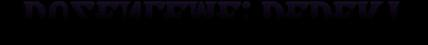
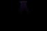
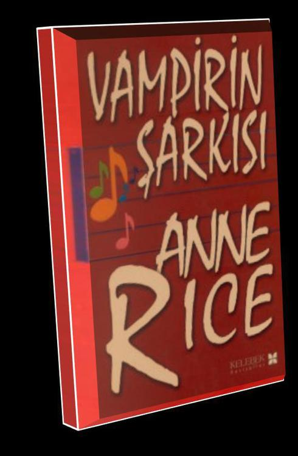
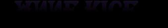
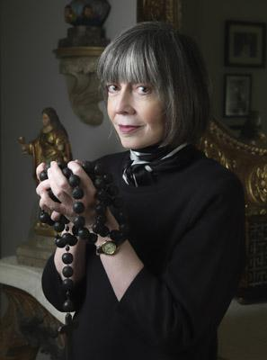
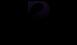

ANNE RICE VAMPİRİN ŞARKISI
The Vampire Lestat
adlı ingilizce baskısından
dilimize çeviren: deniz taneri
redaksiyon: ergül karakaya
kapak tasarımı: fatma bozkurt
kapak filmi: oluşur grafik - iklime öztürk
kapak baskı: seçil ofset
dizgi: nilgün baysal
montaj: iteka
iç baskı ve cilt: eko matbaacılık tesisleri
WEB: www.kelebekyayinlari.com
E. POSTA: post@kelebekyayinlari.com


Anne Rice, (doğum: 4 Ekim 1941) ABD'li yazar.
İlk adı 'Howard Allen O'Brien'dir. Katolik bir İrlanda asıllı ailenin ikinci kızı olarak dünyaya gelmiştir. Anne ismini, okula gittiğinde adını söylemeye
utanması nedeniyle kullanmıştır ve daha sonra da böyle tanınmayı tercih
etmiştir. Anne Rice'ın eserleri goth akımında önemli etkiler yapmıştır. New Orleans, Louisiana'da doğan ve ömrünün büyük kısmını burada geçiren
Rice'ın birçok hikâyesi de bu bölgede geçer. Anne Rice, Avrupa'da çeşitli üniversitelerde 'Vampire Literature Studies'şeklinde kürsüler kurulmasına sebebiyet vermiştir.Kitaplarının başlıca konuları vampirler, mumyalar ve cadılardır.Yazılarında sado-mazoşist öğeler de bulunur. 1961'de Stan Rice ile evlenmiş, Michele ismini verdikleri bir kızları olmuştur. Michele 1972 yılında lösemiden ölmüştür. Interview with the vampire'daki Claudia adlı küçük bir kız çocuğu olan vampir kızın kaybettiği Michele'e hem yaşı hem görünüşü
bakımından benzediği ileri sürülmektedir. 1978 yılında Christopher adını verdikleri bir oğulları olmuştur. Romanlarından uyarlanan iki film: Interview with the vampire, Queen of the damned. Ayrıca Lestat, Broadway müzikali
olarak da uyarlanmıştır. Yakın zamanda ateizmden çocukluk inancı olan
katolikliğe dönüş yapan Rice, İsa üzerine romanlar yazmaya başlamıştır.

Yirminci Yüzyılda 1984'te Kent Merkezinde Bir Cumartesi Gecesi
Ben vampir Lestat'ım. Ölümsüzüm. Yani hemen hemen ölümsüz sayılınm. Güneşin ışığı, şiddetli bir ateşin sıcaklığı, bunlar beni yok edebilirler. Ama bunu başaramayabilirler de. Bir seksen boyundayım. Genç bir ölümlü olduğum 1780
yılında bu oldukça etkileyici bir boydu. Şimd de kötü sayılmaz. Neredeyse omuzlarıma dökülen, sık ve dalgalı sarı saçlanm var. Saçlanm floresan ışığında beyaz gibi görünüyorlar. Gözlerim gri ama çevrelerinin rengini yansıtıp mavi ya da mor görünebiliyorlar. Oldukça kısa, dar bir burnum ve güzel biçimli ama yüzüme biraz büyük gelen bir ağzım var. Ağzım çok hain ya da aşırı cömert görünebilir. Görünüşü çok duyguludur, ama duygularım her zaman yüz ifademden anlaşılır zaten. Yüzüm her zaman canlı ve hareketlidir. Vampir doğam kendini aşırı beyaz ve parlak derimden açığa vuruyor. Her tür kameranın karşısında pudra sürmem gerekiyor.
Eğer kana susamışsam korkunç kötü görünürüm. Yanaklarım çöker, damarlarım kemiklerimin üzerinde halatlar gibi ortaya çıkarlar. Ama şimdi bunun olmasına izin vermiyorum. İnsan olmadığımın tek belirtisi el tırnaklarım. Tüm vampirlerde böyledir. Tırnaklanınız cam gibi görünür. Ve kimi insanlar başka hiçbir şeyi farketmediklerinde bile bunu farkederler. Tam şimdi, Amerika'nın deyişiyle bir Rock Süperstar'ıyım. İlk albümüm 4 milyon sattı. Müzik grubumu bir kıyıdan ötekine taşıyacak ülke çapında bir konser turnesinin ilk durağı olarak San Fransisco'ya gidiyorum. Rock müzik kablolu televizyon kanalı MTV iki haftadır gece gündüz benim video küplerimi yayınlıyor. Bunlar İngiltere'de 'Pop Top'ta ve Kıta'da da gösteriliyorlar. Belki Asya'nın kimi bölgelerine ve Japonya'ya da ulaşmışlardır. Bütün serinin video kasetleri dünya çapında satıyor. Aynı zamanda geçen hafta yayınlanan yaşamöykümün de yazarıyım. Yaşamöykümde kullandığım dil olan İngilizceye gelince, bunu yaklaşık iki yüzyıl önce Mississippi'den New Orleans'a gelen teknelerdeki adamlardan öğrenmiştim. Bundan sonra İngiliz yazarlarını okuyarak daha fazlasını öğrendim. Yıllar geçerken Shakespeare'den Mark Twain'e, H. Rider Haggard'a kadar bütün yazarların kitaplarını okudum. Son öğrendiklerim de yinninci yüzyılın başlarında Kara Maske dergisinin dedektif öykülerinden geldi. Sözcüğün tam anlamıyla yeraltına girmeden önce son okuduğum öyküler Kara Maske'deki Sam Spade maceralarıydı. Bu 1929'da New Orleans'da oldu. Yazı yazdığım zaman on sekizinci yüzyılda benim için doğal gelen bir yazı tarzına, o zamanlar okuduğum yazarların kullandığı biçimde anlatımlara doğru kayarım. Ama konuştuğumda aksanımın biraz Fransızca'ya kaymasına karşın bir gemici ve dedektif Sam Spade'in bir karışımı gibi anlaşılıyorum. Bu yüzden umarım zaman zaman satırların arasına bir on sekizinci yüzyıl havası üflersem göstereceğim tutarsızlıklara katlanırsınız.
Yirminci yüzyıla geçen yıl geldim. Beni dışarı çıkaran iki şey vardı. İlki uyumak üzere yeraluna girdiğim sıralarda gürültüleriyle havayı dolduran yüksek seslerden edindiğim bilgilerdi. Tabii burada söylemek istediğim sesler radyoların, pikapların ve daha sonra da televizyonların sesleri. Yattığım yerin yakınındaki eski Garden District'in yollarından geçen arabalardaki radyoları duyuyordum. Benim evimi çevreleyen evlerdeki pikapları ve TV'leri duyuyordum. Bir vampir yeraltına gittiğinde, yani kan içmeyi bırakıp yalnızca toprak altında yattığında çok geçmeden kendini uyandıramayacak kadar zayıf düşer ve ardından düşler gönneye başlar. Bu durumdayken sesleri bulanık bir şekilde duyuyordum ve bunlan kendi yarattığım imgelerle donatıyordum. Tıpkı bir ölümlünün uykusunda yaptığı gibi. Ama son elli beş yılda neler duyduğumu anımsamaya, eğlence programlarını izlemeye, haberleri dinlemeye, popüler şarkıların sözlerine ve ritimlerine kulak vermeye başladım. Ve yavaş yavaş dünyanın geçirdiği değişikliklerin ne denli büyük olduğunu anlamaya başladım. Savaşlar ve buluşlar üzerine bilgi veren özel programları dinlemeye, konuşma dilinde kendini gösteren yeni biçimleri izlemeye başladım. Sonra içimde bir şeyler yeniden uyandı. Artık düş görmediğimi anladım. Duyduklarımı düşünüyordum. Tümüyle uyanıktım. Toprakta yatıyordum ve kana susamıştım.
Bilincim uyanmıştı. Eskiden açılan bütün yaraların artık iyileşmiş olabileceğine inanmaya başladım. Belki gücüm geri gelmişti. Belki de gücüm artmıştı bile. Çünkü eğer hiç yaralanmamış olsaydım böyle olacaktı. Böyle olup olmadığını anlamak istiyordum. Durmaksızın insan kanı içmeyi düşünmeye başladım. Benim geri gelmemin ikinci nedeni, kendilerine Şeytan'ın Gece Gezisi adını veren genç bir rock şarkıcıları grubuydu. Altıncı Caddede bir eve taşındılar. Burası benim evimin altında uyukladığım Lafayette Mezarlığı yakınındaki Prytania'nın hemen yanındaydı. Ve 1984 yılında kendi rock müziklerinin provalarını yapmaya başladılar. Elektrikli gitarlarının sızlanışını, kendilerinden geçip şarkı söylemelerini duyabiliyordum.
Duyduğum radyo ve stereo şarkılar kadar iyiydi söyledikleri, üstelik pek çoğundan daha melodikti. Kulakları tırmalayan davullara karşın bunda romantik bir yan vardı.
Elektrikli piyano harpiskord gibi duyuluyordu. Müzikçilerin düşüncelerinden onların neye benzediklerini bana gösteren imgeler yakaladım. Birbirlerine ya da aynaya baktıklarında gördükleri şeyleri bana gösteren imgelerdi bunlar. İnce, güçlü ve son derece sevimli genç ölümlülerdi bunlar. Aldatıcı bir erkeksilikleri, giysilerinde ve davranışlarında biraz da yabanıllık vardı. İkisi erkek biri dişiydi. Çaldıkları zaman çevremdeki başka yüksek seslerin çoğunu boğuyorlardı. Ama bundan hiç şikâyetim yoktu. Yerimden kalkmak ve Şeytan'ın Gece Gezisi adındaki rock grubuna katılmayı düşünmeye başlamıştım. Şarkı söylemek ve dans etmek istiyordum. Ama başlangıçta bu isteğimin altında çok fazla düşünce yattığını söyleyemem. Bu daha çok bir güdü gibiydi. Beni yerin altından kaldıracak kadar güçlü bir güdü. Rock müzik dünyasından büyülenmiştim. Şarkıcıların iyi ve kötü konusunda çığlıklar atabilmeleri, kendilerinin melekler ya da şeytanlar olduklarını bildirmeleri ve ölümlülerin ayağa kalkıp onları alkışlaması beni çok etkiliyordu. Zaman zaman insan kılığına gimıiş deliliğin kendisi gibi görünüyorlardı. Yine de sahnede yaptıkları şeyler teknolojik olarak da göz kamaştırıcıydı. Aynı zamanda hem barbarcaydı hem de insan beyniyle yapılıyordu. Geçmiş çağlarda böyle bir şey hiçbir zaman görülmemişti.
Kuşkusuz bağırtılan yalnızca bir roldü. Kendi rollerini ne denli iyi oynarlarsa oynasınlar içlerinden hiçbiri şeytanlara ya da meleklere inanmıyordu. Eski İtalyan komedisinin oyuncuları gibi şaşırtıcı, buluşçu ve kurnazlardı. Yine de kabalık ve küstahlık konusunda gidebildikleri aşırılıklar, ve en zenginlerden en yoksullara dek bütün dünyayı kucaklama yolları bütünüyle yeniydi. Aynı zamanda rock müzikte vampirik bir yan vardı. Bence bunun doğaüstü olaylara ya da güçlere inanmayanların dahi kulağına yansıması olağandır. Yani, elektriğin tek bir notayı sonsuza dek uzatabilmesini, sonunda kendinizi sesin içinde eridiğinizi hissettiğiniz noktaya dek anrıoni üstüne armoni bindirilebilmesini söylemek istiyorum. Bu müzik dehşet konusunda öylesine ustaydı ki dünya daha önce böyle bir dehşetin hiçbir biçimini görmemişti. Evet, buna yakınlaşmak istiyordum. Bunu yapmak istiyordum. Belki de Şeytan'ın Gece Gezisi grubunu ünlü yapmak istiyordum. Yukan çıkmaya hazırdım.
Uyanmam aşağı yukarı bir hafta aldı. Yerin alünda yaşayan küçük hayvanlardan yakalayabildiklerimin kanıyla karnımı doyurdum. Sonra fareleri yakalamak için yüzeyi tırmalamaya başladım. Sonra kedileri ve sonunda kaçınılmaz olarak bir insan kurbanı yakalamak çok zor değildi. Ama özellikle istediğim türden birisi için uzun süre beklemem gerekti. Benim yakalamak istediğim insan başka ölümlüleri öldürmüş
ve buna pişman olmamış biriydi. Sonunda biri geldi. Dünyanın öteki ucunda uzak bir yerlerde bir başkasını öldürmüş, saçı başı karmakarışık bir adam hemen parmaklığın dibinden yürüyordu. Gerçek bir katildi. Ve, oh, insanla dövüşmenin ve insan kanının o ilk tadı! Yakındaki evlerden giysiler çalmak, Lafayette mezarlığında sakladığım altınlar ve mücevherlerden bazılarını almak hiç sorun olmadı. Kuşkusuz zaman zaman korkuyordum. Kimyasalların ve petrolün kokusu beni hasta etti.
Soğutucuların homurtuları ve tepemdeki jet uçaklarının uğultuları kulaklarımı incitti.
Ama ayakta geçirdiğim üçüncü geceden sonra, büyük, siyah bir Harley-Davidson'un üzerinde New Orleans çevresinde dolaşırken aynı gürültüleri kendim bol bol çıkarır olmuştum. Karnımı doyurmak için daha fazla katil arıyordum. Kurbanlarımdan aldığım muhteşem 9 siyah deri giysiler giyiyordum. Fırtına gibi dolaşırken cebimde hep kulağıma Bach'ın Fugue'ünü dolduran küçük bir Sony Walkman stereo vardı.
Yeniden vampir Lestat olmuştum. Eyleme geri dönmüştüm. New Orleans bir kez daha av alanım olmuştu. Gücüme gelince, eh, bir zamanlar olduğunun üç katına çıkmıştı. Sokaktan dört katlı bir binanın tepesine atlayabilirdim. Pencerelerdeki demir parmaklıkları sökebilirdim. Bakır bir parayı ikiye bükebilirdim. İstediğim zaman çevredeki binalardaki insanların seslerini duyabilir ve düşüncelerini okuyabilirdim. İlk haftanın sonunda bana yasal bir nüfus kâğıdı, Sosyal Güvenlik kartı ve ehliyet edinmemde yardımcı olması için kentin merkezindeki cam ve çelik gökdelenlerden birinden güzel bir dişi avukat tuttum. Eski hazinemin büyük bir bölümü ölümsüz Londra Bankası ve Rotschild Bankasının şifreli hesaplarından New Orleans'a yola çıkmışlardı. Ama daha önemlisi gerçeklerin içinde yüzüyordum.
Yüksek seslerin yirminci yüzyıl konusunda bana söyledikleri her şeyin doğru olduğunu biliyordum. 1984'te New Orleans sokaklarında motor gürültüleri çıkararak dolaşırken gördüklerim şunlardı: İçinde uykuya daldığım karanlık ve ürkütücü endüstri dünyası sonunda kendini yakıp bitirmişti. Amerikan kafası artık eski burjuva gururuna aldırmıyordu ve uyuşumculuğu bir yana atmıştı. İnsanlar yeniden maceracı ve erotik olmuşlardı. 1700'lerin sonlarındaki büyük orta sınıf devrimlerinden önceki eski günlerine benziyorlardı. Giderek o günlerde olduğu gibi görünüyorlardı. Erkekler artık Sam Spade'in gömlek, kravat, gri takım ve gri şapkalı üniformasını giymiyorlardı. Bir kez daha üzerlerinde kadife ve ipekli giysiler vardı ve isterlerse parlak renklerde giyiniyorlardı. Artık saçlannı Romalı askerler gibi kesmeleri gerekmiyordu. Hangi boyda isterlerse o boya kadar uzatıyorlardı. Ve kadınlar. Kadınlar muhteşemdi. İlkbaharın sıcağında Mısırlı firavunlar zamanındaki gibi çıplaktılar. Kısacık etekli giysileri vardı ya da isterlerse kıvrımlı bedenlerini sımsıkı saran erkek pantolonlan ve gömlekleri giyiyorlardı. Markete giderken bile kendilerini boyuyor ve altın ve gümüşlerle süslüyorlardı. Bazen de yüzlerini yıkamış
ve hiçbir süs takınaksızın dolaşabiliyorlardı. Saçlarını Marie Antoinette gibi kıvırıyor, tümüyle kesiyor ya da rüzgârda uçmaya bırakıyorlardı. Belki de tarihte ilk kez erkekler kadar güçlü ve ilginçtiler. 101 ANNF. RICH Ve bunlar Amerika'nın sıradan insanlarıydı. Her zaman belli bir üstünlük ve yaşam enerjisine ulaşmayı başaran zenginler değildi yalnızca bu insanlar. Eski Aristokratik duyusallık artık herkese yayılmıştı. Orta sınıf devriminin verdiği sözlere bağlı kalınmıştı. Bütün insanların sevmeye, lükse ve güzel şeylere hakları vardı. Mağazalar oryantal güzellikleri satan yerler olmuşlardı. Mallar yumuşak renkli halılar üzerinde, etkili müziklerle, amber rengi ışıkların altında sergileniyordu. Bütün gece açık olan dükkânlarda mor ve yeşil şampuan şişeleri pırıltılı cam raflarda değerli taşlar gibi parlıyorlardı. Kız garsonlar işlerine parlak, deri koltuklu otomobillerde gidiyorlardı. Liman işçileri akşam evlerine gittiklerinde arka bahçelerindeki ısıtılmış havuzlarda yüzüyorlardı.
Temizlikçiler ve tesisatçılar günün sonunda üstlerini değiştirdiklerinde ustaca dikilmiş hazır giysiler giyiyorlardı. Aslında en eski zamanlardan beri dünyanın büyük kentlerinde her zaman var olan yoksulluk ve pislik neredeyse tümüyle yıkanıp uzaklaştırılmıştı. Sokak aralarında açlıktan ölen göçmenler görmüyordunuz.
İnsanların bir odada sekiz on kişi uyudukları kenar mahalleler yoktu. Kimse bulaşık suyunu kaldırımlara dökmüyordu. Dilenciler, sakatlar, öksüzler, umutsuz hastalıklara yakalananlar öylesine azalmıştı ki temiz ve bakımlı sokaklarda hiçbir yerleri yoktu. Hatta park sıralarında ve otobüs duraklarında uyuyan sarhoşlar ve delilere bile düzenli olarak yemeleri için et veriliyordu, dinleyecekleri radyoları ve yıkanmış elbiseleri vardı. Ama bu işin yalnızca yüzeyiydi. Bu hayranlık verici dalganın altında akıp giden daha derin değişiklikler beni bile şaşırtıyordu. Örneğin zaman büyülü bir değişikliğe uğramıştı. Artık eski olan rutin bir yolda yenisiyle değiştirilmiyordu. Tersine çevremde konuşulan İngilizce 1800'lerdeki ile aynıydı.
Neredeyse eski argo sözler bile hâlâ geçerliydi. Bir yandan da 'onlar senin beynini yıkamışlar' ya da 'duygularının Freudian yanları' gibi yeni ve çarpıcı anlatımlar herkesin dudaklanndaydı. Sanat ve eğlence dünyasına gelince, burada önceki tüm yüzyıllar 'yeniden kullanım'a sokulmuştu. Müzikçiler caz ve rock müziğin yanısıra Mozart çalıyorlardı. İnsanlar bir gece Shakespeare'i ertesi gece bir Fransız filmini seyretmeye gidiyorlardı. Floresan ışıklı dev yapılarda ortaçağ madrigallerinin kasetlerini alabilir ve arabanızda otoyolda saatte 140 km ile giderken araba stereonuzda dinleyebilirdiniz. Kitapçılarda Rönesans şiiri Dickens ve Ernest Hemingway'in kitaplarının yanıbaşında satılıyordu. Seks el kitapları ve Mısırlılar'ın Ölüler Kitabı aynı masada duruyordu. Zaman zaman çevremde her yerdeki zenginlik ve temizlik bir yanılsamaya dönüşüyordu. Aklımı kaybettiğimi düşünüyordum.
Dükkân vitrinlerinde aptallaşmış biçimde bilgisayarları ve telefonları seyrediyordum. Doğanın en egzotik deniz kabukları gibi yalnızca biçim ve renkten oluşmuş gibi görünüyorlardı. Dev gümüş limuzinler Frendi Quarter'ın dar sokaklarında zıpkın işlemeyen deniz canavarları gibi süzülüyorlardı. Kanal Caddesi üzerindeki eski tuğla binaların üzerinde yükselen parlak büro binalarının kuleleri gece gökyüzüne Mısır obeliskleri gibi dalıyorlardı. Sayısız televizyon programı her serinletilmiş otel odasına bitmeyen bir imgeler seli akıtıyordu. Ama bu bir yanılsamalar dizisi değildi. Bu yüzyıl dünyayı her evresiyle birlikte hiç reddetmeksizin miras almıştı. Ve bu beklenmedik mucizenin önemli bir yanı da bu insanların özgürlüklerinin ve zenginliklerinin ortasında ilginç bir bilgisizlik içinde olmalarıydı. Hıristiyan Tanrı 1700'lerde olduğu kadar ölüydü. Ve eskisinin yerini alacak hiçbir yeni mitolojik din doğmamıştı. Tersine, bu çağın en yalın insanlarını güden laik ahlak yasalan bildiğim tüm dinsel ahlak yasalarından daha güçlüydü.
Ölçütleri entelektüller koyuyordu. Ama tüm Amerika'da en sıradan insanlar 'banş',
'yoksullar' ve 'gezegen' konusunda sanki gizemli bir din tarafından güdülüyormuşçasına duyarlıydılar. Açlığı bu yüzyılda dünyanın yüzünden silmeye kararlıydılar. Ne pahasına olursa olsun hastalığı ortadan kaldıracaklardı. Ölüm cezasına, doğmamış bebeklerin öldürülmelerine karşı ateşli tartışmalar yapıyorlardı.
Ve 'çevre kirliliği' ve 'soykınm savaşı' tehlikelerine karşı geçmiş çağların insanlarının cadılarla ve dinsizlerle savaştıkları gibi ateşli biçimde savaşıyorlardı. Cinselliğe gelince, artık bir önyargı ve korku konusu olmaktan çıkmıştı. En son dinsel kalıntılar üzerinden soyulmuştu. İnsanların çevrede yarı çıplak dolaşmalarının ve sokaklarda birbirlerine sarılıp öpüşmelerinin nedeni buydu. Şimdi artık geleneklerden, sorumluluktan ve bedenin güzelliğinden söz ediyorlardı. Üreme ve cinsel hastalıkları denetim altına almışlardı. Ah, yirminci yüzyıl. Ah, büyük çarkın dönüşü. En inanılmaz düşlerin bile ötesine geçmişti bu gelecek. Karamsar peygamberleri geçmiş çağların aptalları durumuna düşülmüştü. » 12 | ANNE RICF. Günahsız laik ahlak konusunda, bu iyimserlik konusunda çok düşündüm. Bu göz kamaştırıcı biçimde ışıklandırılmış
dünyada insan yaşamının değeri hiçbir zaman olmadığı denli büyüktü. Dev bir otel odasının amber renkli elektrik aydınlığında önümdeki ekranda inanılmaz ustalıkta yapılmış bir savaş filmi izledim. Adı Felaket Şimdi'ydi. Öylesine bir ses ve renk senfonisiydi ki. Batı dünyasının kötülüğe karşı çağlardır süren savaşının şarkısını söylüyordu. Kamboçya'nın yabanıl yeşilliğinde deli kumandan 'Dehşeti ve ahlaksal terörü kendine dost edinmelisin' diyordu. Buna Batılı adamın yanıtı her zamanki gibiydi: Hayır. Hayır. Dehşet ve ahlaksal terör hiçbir zaman temize çıkanlamaz. Hiçbir gerçek değeri yoktur. Arı kötülüğün gerçek hiçbir yeri yoktur. Ama bunun anlamı benim de bir yerimin olmadığı değil mi? Belki de kötülüğü reddeden sanat dışında.
Vampir çizgi romanları, korku romanları, eski gotik öyküler gibi. Ya da her bir ölümlünün kendi içinde kötülüğe karşı verdiği savaşı dramatize eden rock yıldızlarının gürleyen haykırışlarının dışmda. Bir Eski Dünya canavannın bu güçlü tabloda ne denli yersiz kaldığını görmesi onu toprağın içine geri göndermeye yeterdi.
Toprağın altına girip ağlaması için bu yeterdi. Ya da biraz düşünürseniz bir rock şarkıcısı olması için de bu yeterliydi. Ama başka Eski Dünya canavarlan neredelerdi?
Merak ediyordum. Her bir ölümün dev elektronik bilgisayarlara kaydedildiği ve bedenlerin dondurulmuş kapsüllere taşındığı bir dünyada başka vampirler nasıl varoluyorlardı? Belki de bir yığın felsefe konuşmasına ve bir yığın söz vermelerine karşın, sonunda her zaman yaptıkları gibi can sıkıcı böcekler gibi gölgelere saklanmışlardı. Pekâlâ, Şeytan'ın Gece Gezisi adındaki küçük grupla birlikte sesimi yükselttiğim zaman onların hepsini çok geçmeden ışığa çıkaracaktım. Eğitimimi sürdürdüm. Otobüs duraklarında, benzin istasyonlarında, içki içilen şık lokantalarda ölümlülerle konuştum. Kitaplar okudum. Moda mağazalarının parlak deri giysilerine burundum. Beyaz dik yakalı gömlekler ve tiril tiril haki safari ceketleri giydim, ya da yumuşacık gri kadife hırkalar giyip boynuma kaşmir atkılar bağladım. Yüzümü pudraladım ki bütün gece açık süpermarketlerin, hamburgercilerin, gece kulübü denilen karnaval yerlerinin kimyasal ışıklarının altından geçebileyim. Öğreniyordum.
Gördüklerime âşık olmuştum. Ve tek sorunum karnımı doyuracak katillerin çok az bulunmasıydi. Saflığın ve bolluğun, kibarlığın ve mutluluğun ve dolu midelerin bu parlak dünyasında geçmişin alışıldık boğaz kesen hırsızları ve onların tehlikeli liman kahveleri neredeyse yok olmuştu. Öyleyse geçimimi kazanmam için çalışmam gerekiyordu. Ama ben her zaman bir avcı olmuştum. Üzerinde tek bir ampul parlayan yeşil masanın çevresinde kollan dövmeli eski suçluların toplandığı dumanlı bilardo salonları ve büyük beton otellerin parlak saten kaplı gece kulüpleri en sevdiğim yerlerdi. Ve avlarım konusunda sürekli olarak daha çok şey öğreniyordum.
Uyuşturucu satıcıları, kadın kiralayanlar, motosiklet çeteleriyle dolaşan katiller.
Suçsuz kanı içmeme konusunda her zamankinden daha kararlıydım. Sonunda eski komşulanmı, Şeytan'ın Gece Gezisi adındaki rock grubunu ziyaret etme zamanı gelmişti. Sıcak ve yapışkan bir cuma gecesi altı buçukta bodrumdaki müzik stüdyosunun kapısını çaldım. Genç ve güzel ölümlülerin hepsi gökkuşağı renklerindeki ipek gömlekleri ve dapdaracık pantolonları içinde çevreye serilmiş
esrarlı sigaralarını içiyor ve Güney'de bir şey yapamamış oldukları için berbat şanslarından yakınıyorlardı. Uzun, temiz ve dağınık saçları ve kedi gibi hareketleriyle İncil'in meleklerine benziyorlardı. Takılan Mısırlı'ydı. Prova yaparken bile yüzlerini ve gözlerini boyamışlardı. Yalnızca onlara bakmak bile heyecan ve sevgiyle dolmama yetmişti. Alex, Larry ve körpe, küçük Tough Cookie. Dünyanın ayağımın altında kımıldamadan duruyor gibi göründüğü garip bir anda onlara kim olduğumu anlattım.
Vampir sözcüğünde onlar için yeni hiçbir şey yoktu. Onların parladığı galakside binlerce başka şarkıcı, oyuncu kanatları takmış ve siyah pelerinler giymişti. Yine de ölümlülere yasaklanmış gerçeği onlara anlatmak bana çok garip geldi. İki yüzyıl boyunca hiçbir zaman bunu bizden birisi olmak üzere işaretlenmiş olmayan birine söylememiştim. Kurbanlarıma bile gözleri kapanmadan önce bunu itiraf etmezdim.
Oysa şimdi bu yakışıklı genç yaratıklara açık ve seçik olarak anlatmıştım. Onlara, onlarla birlikte şarkı söylemek istediğimi, eğer bana güvenirlerse hepimizin zengin ve ünlü olacağını söyledim. Olağandışı ve acımasız bir tutku dalgasına yakalanıp onları bu odadan dışarıya, büyük dünyaya taşıyacağımı anlattım. Bana baktıklan zaman gözleri buğulandı. Küçük yirminci yüzyıl odasının kireç sıvalı duvarlannda onların neşeli kahkahalan yankılandı. 14 ANNE RICK Sabırlıydım. Niye olmayayım ki?
Neredeyse her insan sesini ve hareketini taklit edebilecek bir şeytan olduğumu biliyordum. Ama onların anlamasını nasıl bekleyebilirdim? Elektrikli piyanoya gittim ve çalıp söylemeye başladım. Başlangıçta önceden duyduğum rock şarkılarını taklit ettim, sonra eski şarkıları ve sözlerini yeniden yakaladım. Ruhumda derinlere gömülmüş ama hiçbir zaman terkedilmemiş Fransız şarkılarını. Bunları kaba ritimlerle sarıp sarmaladım. Gözümün önüne yüzyıllar önceki kalabalık küçük bir Paris tiyatrosu gelmişti. İçimde tehlikeli bir tutku kabardı. Dengemi tehdit ediyordu.
Bunun bu denli çabuk gelmesi tehlikeliydi. Yine de şarkı söylemeyi sürdürdüm.
Elektrikli piyanonun kaygan beyaz tuşlarını döverken içimde bir şeyler kırılıp açığa çıktı.
Çevremdeki
hassas
ölümlü
yaratıkların
bunu
hiçbir
zaman
anlayamayacaklarına aldırmıyordum. Onların coşmaları, bu ürkütücü, kopuk kopuk müziği sevmeleri, çığlıklar atmaları yeterliydi. Gelecek umutlarıyla dolmuşlardı, şimdiye dek bir türlü elde edemedikleri şeyi görüyorlardı. Teyplerini çalıştırdılar, birlikte çalıp söylemeye başladık. Stüdyo kanlarının kokusuyla ve fırtınalı şarkılarımızla dolmuştu. Ama sonra en garip düşlerimde bile aklıma gelmeyecek bir şok oldu. Benim bu yaratıklara küçük itirafım kadar alışılmadık bir şey. Aslında bu öylesine sersemleticiydi ki, beni onların dünyasından gerisin geri yeraltına sürebilirdi. Tekrar derin uyuşukluğuma geri dönerdim demek istemiyorum. Ama Şeytan'ın Gece Gezisi'nden kaçabilir ve sersemlemiş bir şekilde, aklımı başıma toplayabilmek için birkaç yıl dolaşabilirdim. Erkekler, yani ince ve parlak davulcu Alex ve daha uzun boylu, sarı saçlı ağabeyi Larry onlara adımın Lestat olduğunu söylediğimde adımı anımsadılar. Yalnızca adımı tanımakla da Ihılmadılar. Bir kitapta benimle ilgili olarak okudukları bir yığın bilgiyi de bana aktardılar. Aslında, benim yalnızca sıradan bir vampir ya da Kont Drakula kılığına girmemiş olmam onları çok mutlu etmişti. Herkes Kont Drakula'dan bıkmıştı. Benim vampir Lestat olduğumu söylememi hayranlık verici bulmuşlardı. 'Vampir Lestat kılığına ginrıek mi?' diye sordum. Hepsine uzun bir an boyunca baktım, düşüncelerini taramaya çalışıyordum.
Kuşkusuz, benim gerçek bir vampir olduğuma inanmalarını beklememiştim. Ama benimki kadar alışılmadık adı olan bir uydurma vampir öyküsü okumuş olmaları. Bu nasıl açıklanabilirdi? 'Kitabı bana gösterin,' dedim. Öteki odadan kitabı getirdiler.
Ciltli, küçük bir romandı, dağılmak üzereydi. Astarı yoktu, cildi kopmuştu, bütün kitabı yalnızca bir şerit bir arada tutuyordu. Kapağını görünce bir tür titremeye kapıldım. Vampirle Görüşme. Ölümlü bir gencin ölümsüzlerden birine anlattırdığı bir öyküydü bu. Onlardan izin alıp öteki odaya gittim, yataklarına uzandım ve okumaya başladım. Yarısına kadar geldiğimde kitabı yanıma aldım ve evden ayrıldım. Kitabı okuyup bitirinceye dek bir sokak lambasının ajtında kazık gibi dikildim. Sonra dikkatle göğüs cebime yerleştirdim. Yeniden grubun yanına dönmeden önce birkaç gece geçmişti. Bu zamanın çoğunda geceleri Harley-Davidson motosikletimi gürleterek dolaşıp duruyordum. Kulağımda sesini sonuna kadar açtığım Bach'ın Goldberg Çeşitlemeleri akıp giderken kendime soruyordum. Lestat, şimdi ne yapmak istiyorsun? Zamanın geri kalanında yeni bir amaçla çalışmalarımı sürdürdüm. Rock müzik üzerine yazılmış kalın, karton kapaklı tarihleri okuyordum. Albümleri dinliyor ve sessizce konser videolarına dalıyordum. Gece boşalıp sessizleştiğinde Vampirle Görüşme'den seslerin sanki bir mezardan söylermişcesine bana şarkı söylediklerini duyuyordum. Kitabı tekrar tekrar okudum. Sonra bir an müthiş bir öfkeye kapılıp parça parça ettim. Sonunda kararımı vermiştim. Genç avukatım Christine ile gökdelendeki karartılmış bürosunda buluştum. Bizi yalnızca kentin ışıkları aydınlatıyordu. Arkasındaki cam duvarların önünde öyle güzel görünüyordu ki.
Ötelerdeki bulanık binalar binlerce meşalenin yandığı vahşi ve ilkel bir savaş alanı gibi görünüyorlardı. 'Artık benim küçük rock grubumun başarıya ulaşması yeterli değil,' dedim ona. 'Benim adımı ve sesimi dünyanın en uzak köşelerine taşıyacak bir ad yaratmamız gerekiyor.' Avukatların her zaman yaptıkları gibi sakince ve akıllıca bütün hazinemi tehlikeye atmama karşı beni uyardı. Yine de manyakça bir kendine güvenle sözlerimi sürdürdüm. Onun da yavaş yavaş sağduyusunu yitirip bu düşüncenin çekimine kapıldığını hissedebiliyordum. 'En iyi Fransız rock video film yöneticileri,' dedim. 'Bunları kandırıp New York ve Los Angeles'ten getirmen gerekiyor. Bunun için gereğinden fazla param var. Burada çalışacağımız stüdyolar bulabile- 16 I ANNE RİCn ceğinden eminim. Sonradan ses düzenlemeleri yapacak genç plak üreticilerini de bulacaksın. Burada da en iyilerini tutman gerekiyor. Bu girişim için ne harcayacağımız önemli değil. Önemli olan şey bunun öyle yapılması ki albümlerimiz, filmlerimiz ve yazmayı amaçladığım kitap piyasaya verilinceye kadar çalışmamız gizli kalacak.' Sonunda zenginlik ve güç düşleriyle başı dönmeye başlamıştı. Notları alırken kalemi uçuyordu. Peki ben onunla konuşurken neyi hayal ediyordum? Tüm dünya üzerinde benim türümden olanlara karşı beklenmedik bir başkaldırıyı ve korkunç bir gözdağı vermeyi. 'Bu rock videoları için,' dedim. 'Benim hayallerimi gerçekleştirecek yöneticiler bulmalısın. Filmler dizi olacaklar. Yazmak istediğim kitabın içindeki öyküyü anlatmaları gerekiyor. Şarkıların pek çoğunu şimdiden yazdım bile. En iyi aletleri ele geçimıelisin. Synthetizerlar, en iyi ses sistemleri, elektrogitarlar, kemanlar. Başka ayrıntılarla sonra ilgileniriz. Vampir giysilerinin çizilmesi, rock televizyon istasyonlarında nasıl sunulacağımız, San Fransisco'da ilk kez halkın karşısına nasıl çıkacağımız. Bunların hepsinin zamanı gelecek. Şimdi önemli olan gereken telefonları etmen ve başlamak için gereken bilgileri toplaman.' İlk anlaşmalar yapılıp imzalanmadan önce Şeytan'ın Gece Gezisi'nin yanına geri dönmedim. Onları gördüğümde tarihler belirlenmiş, stüdyolar kiralanmış, anlaşma mektuptan imzalanmıştı. Bunlardan sonra Christine ile birlikte yola çıktık. Sevgili genç rock müzikçilerim Larry, Alex ve Tough Cookie için deniz canavarı gibi dev bir limuzinimiz vardı. Elimizde nefes kesici büyüklükte paralar ve imzalanacak kâğıtlar vardı. Sakin Garden District Sokağının uykulu meşe ağaçlarının altında onların pırıldayan kristal bardaklarına şampanya doldurdum: Ayışığında
'Vampir Lestat'ın Şerefine' şarkılar söyledik. Grubun yeni adı ve yazacağım kitabın adı bu olacaktı. Tough Cookie körpe küçük kollannı bana doladı. Kahkahalar ve şarap buharları arasında duygulu duygulu öpüştük. Ah, masum kanın o güzel kokusu! Onlar arabanın kadife kaplı koltuklarına oturup uzaklaştıklarında, hoş kokulu gecenin içinde St. Charles Avenue'ye doğru yollandım ve benim küçük ölümlü dostlarımı bekleyen tehlikeyi düşündüm. Kuşkusuz bu benden gelmezdi. Ama uzun gizlilik dönemi sona erdiğinde uğursuz ve pervasız yıldızlarıyla birlikte, bütün saflıkları ve masumluklarıyla uluslararası sahnenin ışıkları altına çıkacaklardı. Pekâlâ, onları koruyucular ve akla gelebilecek her amaç için peşlerine 17 takacağım adamlarla donatacaktım. Onları başka ölümsüzlerden elimden geldiğince koruyacaktım. Ve eğer bu ölümsüzler eski günlerde oldukları gibiyseler böyle bir insan gücüyle kaba bir mücadele riskine hiçbir zaman girmeyeceklerdi. İnsan dolu bulvarda yürürken gözlerimi aynalı gözlüklerle örtmüştüm. Kent merkezine giden eski St. Charles tramvayına bindim. Sabahın erken saatlerinin kalabalığı arasından Ville Books adındaki kibar, iki katlı kitapçıya yürüdüm. Burada rafta duran küçük karton kapaklı Vampirle Görüşme kitabına baktım durdum. Bizim türümüzden olanlardan kaç tanesinin bu kitabı farkettiğini merak ediyordum. Bunun bir kurgu olduğunu düşünen ölümlülere aldırmıyordum. Ama başka vampirler ne düşünüyorlardı?
Çünkü eğer bütün vampirlerin kutsal saydıkları tek bir yasa varsa bu da şuydu: ölümlülere bizim hakkımızda hiçbir şey anlatmamalısın. İnsanlara güçlerimizin Karanlık Armağanını vermeyi amaçlamıyorsan 'sırlanmızı' hiçbir zaman onlara aktarmazsın. Başka ölümsüzlerin adlarını, yattıkları yerin neresi olduğunu hiçbir zaman söylemezsin. Vampirle Görüşme'nin anlatıcısı olan sevgili Louis bunların hepsini yapmıştı. Benim röck şarkıcılarına gizlice kendimi açıklamamın çok ötelerine gitmişti. Yüz binlerce okuyucuya bunları anlatmıştı. Bir harita çizip New Orleans'da uyuklamakta olduğum noktanın tam üzerine bir X çizmenin dışında her şeyi yapmıştı. Oysa bu konuda gerçekten de neyi bildiği ve amaçlarının ne olduğu belli değildi. Ne yapmış olursa olsun başkalarının onu avlayacakları kesindi. Ve vampirleri yok etmenin çok kolay yolları vardır, özellikle şimdi. Eğer hâlâ varlığını sürdürüyorsa dışlanmış biriydi ve kendi türümüzden gelecek öyle bir tehlikeyle karşı karşıyaydı ki şimdiye kadar hiçbir ölümlü böyle bir tehlikeyle karşılaşmamıştır. Bütün bunlar benim kitabımı ve Vampir Lestat adındaki grubu olabildiğince ünlü yapmam için çok güçlü nedenlerdi. Louis'yi bulmam gerekiyordu. Onunla konuşmalıydım. Gerçekten de onun anlattığı olayları okuduktan sonra onun için içim sızladı. Onun romantik yanılsamalarına hatta dürüstlüğüne bile acıdım. Onun kibar kötülüğüne ve fiziksel görünüşüne, aldatıcı yumuşaklıktaki sesine bile acıyordum. Kuşkusuz benim hakkımda söylediği yalanlar yüzünden ondan nefret ediyordum. Ama sevgim nefretimden çok daha büyüktü. On dokuzuncu yüzyılın karanlık ve romantik yıllarını benimle paylaşmıştı. Hiçbir ölümsüzün yapmadığı gibi bana yoldaşlık etmişti. Ona öykümü yazarken içim sızlıyordu. Vampirle Görüşme'deki kötülüğe bir yanıt değildi öyküm, ama ona gelmeden önce gördüğüm ve öğrendiğim şeyleri anlatıyordum. Bu öyküyü ona daha önce anlatamamıştım. Eski kurallara şimdi ben de aldırmıyordum.
Bunların her birini kırmak istiyordum. Kitabımın yalnızca Louis'yi değil, şimdiye dek tanıdığım ve sevdiğim tüm başka şeytanları çekmesini istiyordum. Yitirdiklerimi bulmak, benim uyuduğum gibi uyuyanları uyandırcnak istiyordum. Yeni yetmeler ve çok eskiler, güzeller, kötüler, deliler, kalpsizler. Video küplerini izlediklerinde ve plakları dinlediklerinde, kitapçıların vitrinlerinde kitapları gördüklerinde bunların hepsi peşime düşeceklerdi. Ve hepsi de beni tam olarak nerede bulacaklarını bileceklerdi. Ben rock süperstan Lestat olacaktım. İlk kez sahneye çıkacağım San Fransisco'ya gelmeleri yetecek. Ben orada olacağım. Ama tüm maceranın bir başka nedeni daha vardı. Daha da tehlikeli, nefis ve delice bir neden. Louis'nin bunu anlayacağını biliyordum. Görüşmesinin, itiraflarının arkasında yatan şey bu olmalıydı. Ölümlülerin bizi bilmelerini istiyordum. Alex, Larry ve Tough Cookie'ye, ve tatlı avukatım Christine'e anlattığım gibi bunu bütün dünyaya duyurmak istiyordum.
İnanmamaları önemli değildi. Bunun sanat olduğunu düşünmeleri önemli değildi.
Asıl önemli olan iki yüzyıl gizlendikten sonra ölümlülere görünür olmamdı! Adımı yüksek sesle söylüyordum. Doğamı anlatıyordum. Oradaydım. Ama burada da Louis'den ileri gidiyordum. Onun öyküsü, bütün garipliklerine karşın kurgu olarak görülmüştü. Ölümlülerin dünyasında bu Paris'teki eski Vampirler Tiyatrosu tablosu denli güvenliydi. Orada, uzaklardaki o gaz lamb^ılarıyla aydınlatılmış eski sahnede vampirler vampirmiş gibi yapan aktörleri taklit ediyorlardı. Oysa ben kameraların önünde spotların ışığına çıkacaktım. Donmuş pamıaklarımla yüzlerce sıcak ve yumuşak ele uzanacak ve onlara dokunacaktım. Eğer yapabilirsem onların ödlerini patlatacaktım, büyüleyecektim ve eğer becerebilirsem onlara gerçeği gösterecektim.
Cesetlerin her gün artan sayılarda mezarlardan çıkmaya başladıklarını, bana en yakın olanların kaçınılmaz kuşkularına kulak vermeye başladıklarını bir düşünün, yalnızca düşünün. Sanatın sanat olmaya son verip gerçek olduğunu düşünün bir. Demek istediğim şey şu; eğer buna gerçekten inanırlarsa, eğer bu dünyanın hâlâ Eski Dünyanın kötü yaratığını, yani vampiri barındırdığını gerçekten anlarlarsa olacakları bir düşünün. Oh, o zaman ne büyük ve görkemli bir savaş yapabilirdik. Bilinecektik, avlanacaktık ve bizimle bu parlayan kent yabanıllığında dövüşeceklerdi. Şimdiye dek hiçbir mit canavarıyla insanlar böyle dövüşmediler. Bu düşünceyi sevmemeyi nasıl başarabilirdim ki? En büyük tehlikeye, en büyük ve en korkunç yenilgiye değer olmayabilir miydi böyle bir şey? Yıkım anında bile hiçbir zaman olmadığım denli canlı olacaktım. Altta gerçeği söylemek gerekirse hiçbir zaman bu noktaya geleceğini düşünmüyordum. Yani ölümlülerin bize inanacaklarını demek istiyorum. Ölümlüler hiçbir zaman beni korkutmamışlardır. Olacak olan başka bir savaştı. Hepimizin bir araya geleceği ya da hepsinin benimle dövüşmeye geleceği savaş. Vampir Lestat'ın gerçek nedeni buydu. Oynadığım oyun bu türden bir oyundu. Ama gerçekten kendini açığa vunrıanın ve yıkımın güzelim olanağı... Eh, bu da bu işi çok daha eğlenceli yapıyordu. Canal Caddesinin karanlık yıkıntılarından eski moda Frenclı Çjuarter otelindeki odamın merdivenlerine geri döndüm. Her yer sessizdi ve bu da benim için uygundu. Pencerelerin altında Vieux Carre ve bunca zamandır tanıdığım İspanyol kasaba evlerinin dar küçük sokakları uzanıyordu. Dev televizyonda Visconti'nin güzel filmi Venedikte Ölüm'ün videosunu izledim. Bir noktada oyunculardan biri kötülüğün gerekli olduğunu söyledi. Dahilerin gıdasıydı. Buna inanmadım. Ama doğru olmasını isterdim. O zaman yalnızca canavar Lestat olabilirdim değil mi? Ve bir canavar olmada her zaman çok usta olmuştum. Ah, neyse... Taşınabilir bilgisayarıma yeni bir disket yerleştirdim ve yaşamımın öyküsünü yazmaya başladım.' Vampir Lestat'ın İlke Eğitimi ve Maceraları Bölüm Bir Lelio'nun Uyanışı 1 Yirmi bir yaşımın kışında at sırtında yalnız başıma bir kurt sürüsünü öldünneye gittim. Bu babamın Fransa'da Auvergne'deki topraklarında oluyordu ve Fransız Devriminden önceki son on yıllan yaşıyorduk. Anımsayabildiğim en kötü kıştı. Kurtlar köylülerimizin koyunlarını çalıyor ve hatta geceleri köyün sokaklannda dolaşıyorlardı. Bunlar benim için acılı yıllardı. Babam Markiz'di, ben onun yedinci oğluydum. Babamın ergenlik çağına ulaşana dek yaşayan üç oğlunun en küçüğüydüm. Unvan ya da topraklar üzerinde hiçbir hakkım ve hiçbir gelecek beklentim yoktu. Varsıl bir ailede bile en küçük oğulun durumu bu olabilir, oysa bizim servetimiz çok önceleri tükenmişti. Elimizdeki her şeyin yasal mirasçısı olan en yaşlı ağabeyim Augustin karısının getirdiği küçük çeyizi onunla evlenir evlenmez harcamıştı. Bütün evrenim babamın şatosu, mülkleri ve yakındaki köydü. Ve huzursuz bir çocuk olarak doğmuştum. Düşler kuran, kızgın, her şeyden yakınan bir çocuktum. Ateşin başına oturup eski savaşlardan ve Güneş
Kral'ın günlerinden konuşmazdım. Tarihin benim için hiçbir anlamı yoktu. Ama bu puslu ve modası geçmiş dünyada bir avcı olmuştum. Aileyi beslemek için sülün, karaca avlıyor, dağdan akan ırmaklardan alabalık yakalıyordum. Gereken ve ele geçirebildiğim her şeyi getiriyordum. O zamanlar yaşamım buydu ve bu yaşamı kimseyle paylaşmıyordum. Bunu yaptığım da çok iyi oluyordu, çünkü gerçekten de açlıktan ölme tehlikesiyle karşı karşıyaydık. Kuşkusuz, birinin kendi atalarının topraklarında avlanması soylu bir uğraştı ve yalnızca bizim bunu yapmaya hakkımız vardı. Benim ormanlarımda burjuvalann en zengini bile silahını doğrultamazdı. Ama zaten silahını doğrultması da gerekmiyordu. Onun parası vardı. Yaşamımda iki kez bu yaşamdan kaçmaya çalıştım ama her seferinde, yalnızca kanatlanm kırılmış olarak geri getirildim. Bu konuda daha fazlasını ilerde anlatacağım. Tam şimdi tüm dağları kaplayan karı ve köylüleri korkutup koyunlarımı çalan kurtlan düşünüyorum. Ve şimdi, o günlerde Fransa'da söylenegelen eski söz aklıma geliyor; eğer Auvergne kasabasında yaşadıysanız Paris'ten öteye gidemezdiniz. Efendi olduğumdan, üstelik bir atın üzerinde oturup silah atabildiğim için köylülerin bana gelmeleri ve kurtlardan yakınmaları, kurtları benim avlamamı beklemeleri doğaldı. Bu benim görevimdi. Ben de kurtlardan hiç korkmuyordum zaten. Yaşamımda hiçbir zaman bir insana saldıran bir kurt görmemiş ve duymamıştım. Ve eğer yapabilseydim onları zehirlerdim, ama et zehire batınlamayacak kadar kısıtlıydı. Böylece soğuk bir ocak sabahında kurtlan birer birer öldürmek için silahlandım. İç çakmaklı tabancam ve tüfeğim vardı. Yanıma hem bunları hem de eski tüfeklerimi ve babamın kılıcını aldım.
Ama şatodan ayrılmadan önce bu küçük cephaneye daha önce hiç yüzlerine bakmadığım bir iki eski silah daha ekledim. Şatomuz eski zırhlarla doluydu. Atalarım St. Louis'in Haçlı Seferlerinden bu yana soyluların sayısız savaşlarına katılmışlardı.
Ve duvarlarda bu şangırdayan döküntülerin üzerinde bir yığın mızraklar, savaş
baltaları, gülleler ve topuzlar asılıydı. O sabah yanıma aldığım silahlar çok büyük çivili bir topuz ve kocaman bir gülleydi. Gülle bir zincire bağlanmış demir bir küreydi ve saldıran birinin üzerine korkunç bir hızla savrulabilirdi. Şimdi, unutmayın bu on sekizinci yüzyılda oluyor. Beyaz peruklu Parisli'lerin yüksek topuklu saten terlikleriyle ayaklarının ucuna basarak dolaştıkları, enfiye çektikleri ve sonra da burunlarını işlemeli mendillere sildikleri yıllar. Ve ben kaba botlarımı, antilop derisi ceketimi giymiş, eyerime bu eski silahlan asmış, boyunlarında çivili tasmalarıyla en büyük iki köpeğim yanımda ava gidiyordum. Benim yaşamım buydu. Ve pekâlâ Orta Çağlarda da yaşıyor olabilirdim. Ve posta yolundan geçen süslü elbiseli yolcuları yeterince görmüş olduğum için bunu oldukça keskin biçimde hissediyordum.
Başkentteki soylular kırlarda yaşayan bizleri 'tavşanyakalayıcılar' diye adlandırıyorlardı. Kuşkusuz biz de onları küçümseyip onlara kral ve kraliçenin dalkavukları diyorduk. Şatomuz binlerce yıldır ayaktaydı ve büyük Kardinal Richelieu bile bizim tülümüze karşı savaşında eski kulelerimizi yıkmayı başaramamıştı. Ama daha önce söylediğim gibi tarihi pek önemsemiyordum. Dağlara doğru at sürerken mutsuz ve öfkeliydim. Kurtlarla şöyle iyi bir dövüş yapmak istiyordum. Köylülerin dediklerine göre sürüde beş kurt vardı. Benim de silahlarım ve bir kurdun omurgasını bir ısırışta koparacak kadar dişleri keskin ve güçlü olan iki köpeğim vardı. Evet, yamaçlarda bir saat kadar at sürdüm. Sonra küçük bir vadiye geldim. Burayı öyle iyi biliyordum ki ne kadar kar yağarsa yağsın hiçbir şey gözümden kaçmazdı. Ve geniş boş alandan çıplak onnana doğru ilerlemeye başladığımda ilk ulumayı duydum. Saniyeler içersinde bir başka uluma, sonra bir başkası daha duyuldu. Şimdi koro öyle uyumluydu ki sürüdekilerin sayısını anlayamaz olmuştum. Yalnızca beni gördüklerini ve birbirlerini çağırdıklarını anlıyordum. Ben de tam bunu yapmalarını umuyordum. O zaman en ufak bir korku duyduğumu sanmıyorum. Ama bir şey hissetmiştim ve bu vücudumdaki tüylerin diken diken olmasına neden olmuştu. Silahlarımı hazırladım. Köpeklerime hırlamayı kesmelerini emrettim ve bulanık bir düşünce bana açık alandan çıkıp bir an önce onnana girsem iyi olacağını söyledi. Köpeklerim uzun uzun havlamaya başlamışlardı.
Omuzumun üzerinden baktım ve kurtların ytfzlerce metre arkamda olduklarını ve karın üzerinde dosdoğru üzerime doğru geldiklerini gördüm. Bunlar üç dev gri kurttu. Tek sıra olmuş geliyorlardı. Ormana doğru kaçmaya başladım. Üç kurt bana yetişemeden kolayca ormana varabilecekmişim gibi görünüyordu. Ama kurtlar aşırı zeki hayvanlardı ve ormana doğru hızla at sürerken sürünün geri kalanını gördüm.
Solumdan beş kadar gelişkin hayvan önüme doğru koşuyordu. Bu bir tuzaktı ve ormana asla yetişemeyecektim. Sürüde köylülerin dediği gibi beş değil sekiz kurt vardı. O anda bile korkmak aklıma gelmemişti. Hayvanların açlık çek- 23 tikleri belliydi, yoksa hiçbir zaman köyün yakınlarına gelmezlerdi. İnsanlara gösterdikleri doğal çekingenlik bütünüyle ortadan kalkmıştı. Savaşa hazırlandım. Topuzu kemerime soktum ve tüfekle nişan aldım. Benden metrelerce ötedeki kocaman erkek hayvanı yere devirdim ve köpeklerimle sürü birbirlerine saldırdıkları sırada silahımı dolduracak zamanım oldu. Çivili tasmaları yüzünden köpeklerimi boyunlarından yakalayamıyorlardı. Ve ilk karşılaşmada köpeklerim kurtlardan birini güçlü dişleriyle hemen yere yıktılar. Ateş edip bir ikinciyi de ben devirdim. Ama sürü köpeklerin çevresini sarmıştı. Tekrar tekrar ateş edip, elimden geldiğince çabuk silahımı yeniden doldururken köpeklere nişan almamaya çalışıyordum. Yine de en küçük köpeğin arka ayakları kırılmış olarak yere düştüğünü gördüm. Kan karların üzerine yayılmıştı. Sürü ölen hayvanı yemeğe çalışırken ikinci köpek onlardan uzak duruyordu ama iki dakika içinde sürü ikinci köpeğin de karnını parçalayıp onu öldürdü. Şimdi, dediğim gibi köpeklerim çok iri ve güçlü hayvanlardı. Onları kendim yetiştirip eğitmiştim. Her zaman onlarla avlanırdım ve şimdi onlardan köpekler diye söz etmeme karşın b zamanlar yalnızca adlarıyla çağırırdım ve öldüklerini gördüğüm zaman ilk kez üzerime aldığım şeyin ne olduğunu ve nelerin olabileceğini anladım.
Ama bunların tümü birkaç dakikada olmuştu. Dört kurt ölü yatıyordu. Bir başkası ölümcül bir yara almıştı. Ama geriye üç tane kalmıştı. Köpeklerle yabanıl bir biçimde karınlarını doyuran bu üç kurttan biri çekik gözlerini bana dikmişti. Tüfeğimi ateşledim, vuramadım, bu kez de tabancamla ateş ettim ve kurt üzerime doğru fırlarken atım geriledi. Diğer kurtlar sanki iplerle çekilmiş gibi bana döndüler ve önlerindeki taze avı bıraktılar. Dizginleri sertçe çekerek atımı ormanın içine doğru istediği gibi koşmaya bıraktım. Onların hırlamalarını ve dişlerinin sesini duyduğumda bile geriye bakmadım. Ama sonra dişlerin ayak bileğimi sıyırdıklarını hissettim. Öteki tabancayı çektim, sola döndüm ve ateş ettim. Kurt arka ayaklarının üzerinde ayağa kalkmış gibi göründü ama çok hızla gözden kayboldu ve atım yine geriledi. Neredeyse düşüyordum. Atımın arka ayaklarının altımdan çekildiğini hissettim. Neredeyse omıana vararak üzereydim ve at yere yıkılmadan önce üzerinden yere atladım. Elimde dolu bir silah daha kalmıştı. Geriye döndüm, silahı iki elimle kavrayıp üzerime atlayan kurda körlemeşine nişan aldım ve kafasını uçurdum.
Şimdi iki hayvan kalmıştı. Kısrak derin bir hırıltı çıkarıyordu, sonra bu ses bir çığlığa dönüştü. Yaşayan herhangi bir hayvandan şimdiye dek bu denli korkunç bir ses çıktığını duymamıştım. İki kurt ata saldırmışlardı. Karların üzerinde yuvarlandım, akımdaki kayalık toprağı hissediyordum. Sonra ağaçlara doğru uzandım. Eğer silahlarımı yeniden doldurabilseydim onlan orada vurabilirdim. Ama dallarını yakalayabileceğim kadar alçak tek bir ağaç bile yoktu. Yakalamak için sıçradım, ayaklarım ağacın buzlu gövdesi üzerinde kayıyorlardı. Sonra kurtlar yaklaşırken yeniden yere düştüm. Elimde kalan tek silahı dolduracak zaman kalmamıştı. Elimde yalnızca gülle ve kılıç kalmıştı çünkü topuzu çok gerilerde bir yerde yitirmiştim.
Ayaklarımın üzerinde doğrulmaya çalışırken büyük bir olasılıkla öleceğimi bildiğimi düşündüm. Ama vazgeçmek hiçbir zaman aklıma gelmedi. Delirmiştim, yabanileşmiştim. Neredeyse hırlayarak yüzümü hayvanlara döndüm ve iki kurttan bana daha yakın olanının dosdoğru gözünün içine baktım. Kendimi dengelemek için ayaklarımı iki yana açtım. Gülleyi sol elime alıp kılıcı çektim. Kurtlar durdular. İlki arkasına baktıktan sonra başını eğdi ve yana doğru adımlar attı. Diğeri sanki görünmez bir işaret bekliyormuş gibiydi. İlki sakin bir şekilde yeniden bana baktı ve sonra ileri atıldı. Gülleyi savurmaya başladım. Çivili top bir halka çiziyordu. Kendi hınltılı nefesimi duyabiliyordum ve dizlerimi sanki ileri fırlayacakmış gibi büktüğümü biliyordum. Gülleyi hayvanın ağzının yan tarafına doğru nişanlayıp bütün gücümle savurdum ama yalmzca sıyırıp geçmişti. Kurt geri kaçtı ve ikincisi benim etrafımda koşarak dönmeye başladı. Dönerek bana yaklaşıyor sonra yeniden uzaklaşıyordu. İkisi de gülleyi sallamama ve kılıcı savurmama yetecek kadar bana yaklaşıyor ve sonra yeniden kaçıyorlardı. Bunun ne kadar sürdüğünü bilmiyorum ama planlarını anlamıştım. Beni yormak istiyorlardı ve buna yetecek güçleri vardı.
Bu onlar için bir oyun olmuştu. Kılıcımı savuruyor, gülleyi sallıyor, savaşıyordum, neredeyse dizlerimin üzerine düşecektim. Bu belki de yarım saatten fazla sürmedi ama böyle bir zaman için hiçbir ölçü yoktu. Ve ayaklarım kesilirken umutsuzcasına son bir oyun oynadım. Taş gibi durdum, silahlar iki yanımdaydı. Ve bu kez öldürmek üzere geldiler, ben de tam bunu yapmalarını umuyordum. Son anda gülleyi savurdum, topun kemiği kırdığını hissettim, başın sağa doğru büküldüğünü gördüm, ve geniş kılıçla kurdun boynunu yardım. Öteki kurt yanıma gelmişti. Dişlerini bacaklarıma geçirdiğini hissettim. Bir anda bacağımı yerinden koparabilirdi. Ama yüzünün yan tarafına vurdum, gözünü yerinden çıkarmıştım. Güllenin topu bunun üzerine çarptı. Kurt bacağımı bıraktı. Ve geriye doğru kaçarken kılıcımı .çekecek kadar yer kazanmıştım. Kılıcı doğrudan hayvanın göğsüne sapladım ve geri çekmeden önce içerde döndürdüm. Bu hepsinin sonuydu. Sürü ölmüştü, ben yaşıyordum. Boş, karla kaplı vadideki tek ses benim soluk alışım ve benden metrelerce ötede yatan ölen kısrağımın titrek çığlıklarıydı. Aklımın yerinde olduğundan emin değilim. Aklımdan geçen şeylerin düşünceler olduğundan emin değilim. Karlann üzerine yıkılmak istiyordum, ama yine de ölü kurtlardan uzaklaşıp ölmekte olan ata doğru yürüyordum. Yaklaştığımda kısrak boynunu kaldırdı, ön ayaklarının üzerinde doğrulmaya çalıştı ve bir kez daha titrek çığlıklarından biriyle yalvardı. Ses dağlarda yankılandı. Göğe ulaşacak gibiydi. Ben orada durmuş ona bakıyordum. Karlann beyazlığı üzerinde karanlık yaralı bedenini, ölmüş arka tarafını ve savaşan ön ayaklarını, göğe kaldırdığı burnunu, arkaya yapıştırdığı kulaklarını ve başında yuvarlanan dev masum gözlerini seyrediyordum ki attan bir çığlık yükseldi.
Yarı yarıya yere yapıştırılmış bir böcek gibiydi ama o bir böcek değildi. O benim savaşan ve acı çeken kısrağımdı. Yeniden bedenini doğrultmaya çalıştı. Eyerden tüfeğimi aldım. Doldurdum. Ve yattığı yerde kafasını sağa sola savurup doğrulmaya çalışırken onu yüreğinden vurdum. Şimdi görünüşü düzelmişti. Hareketsiz ve ölü olarak yatıyordu, üzerinden kan akıyordu ve vadi sessizdi. Titriyordum. Kendimden çirkin bir boğulma sesi çıktığını duydum ve daha ne olduğunu anlamadan karların üzerine kustuğumu gördüm. Her tarafımı kurt ve kan kokusu sarmıştı. Ve yürümeye çalıştığımda neredeyse düşecektim. Ama bir an bile durmadan ölü kurtlara doğru gittim. Beni neredeyse öldürecek olan son kurdu omuzlarımın üzerine aldım ve eve doğru yürümeye başladım. Yol herhalde iki saat kadar sürmüştü. 26 I ANNE RICE
Yine zamanı bilmiyorum. Ama yürürken bu kurtlarla dövüş sırasında hissettiğim ve öğrendiğim her şey kafamdan geçiyordu. Her tökezleyip düşüşümde içimde bir şeyler sertleşti ve kötüleşti. Şatonun kapılarına ulaştığımda sanırım Lestat değildim.
Bütünüyle başka biri olmuştum. Omuzlarımda kocaman kurtla büyük salona girdiğimde cesedin sıcaklığı epey azalmıştı ve ateşin parlaklığı gözlerimi incitiyordu.
Yorgunluktan tükenmenin de ötesindeydim. İçeri girdiğimde ağabeylerim masadan doğruldular, gözleri kör olan babam neler olduğunu öğrenmek istedi, annem onun elini okşadı. Tüm bunları gördüğümde konuşmaya başladım ama ne söylediğimi bilmiyorum. Sesimin çok donuk olduğunu biliyorum ve neler olduğunu anlatırken içimde her şeyin çok yalın olduğu duygusu vardı. 'Ve sonra... ve sonra...' gibi bir şey.
Ama ağabeyim Augustin bir anda beni kendime getirdi. Bana doğru geldi, ateşin ışığı arkasında kalıyordu. Sözlerimin yavaş ve tekdüze akışını birdenbire kesti. 'Seni küçük piç,' dedi soğuk bir sesle. 'Sen sekiz kurt öldürmedin!' Yüzünde çirkin ve karşısındakinden iğrenen bir ifade vardı. Ama asıl ilginç olanı neredeyse bu sözleri söyler söylemez, her nasılsa yanlış bir şey yaptığını anlamış olmasıydı. Belki benim yüzümdeki anlatım buna neden olmuştu. Belki de annemin öfkeyle mırıldanması ya da öteki ağabeyimin hiç ama hiçbir şey söylememiş olması. Bunun nedeni her neyse bu bir anda olmuştu ve üzerine çok ilginç bir utangaçlık geldi. Bunun ne kadar inanılmaz bir şey olduğunu, nasıl olup da öldürülmekten kurtulduğumu anlamadığını, hizmetçilerin bana hemen biraz çorba getimıelerini ve buna benzer şeyler geveledi, ama bunlar bir işe yaramadı. Tek bir saniyede olan şey geri alınamaz bir yanlıştı. Ve bunun ardından kendimi (5damda yalnız başına yatar buldum. Kışın her zaman olduğu gibi köpeklerim yatağımda yanımda değillerdi, çünkü ölmüşlerdi.
Ateşin yakılmamış olmasına karşın, pis ve kanlı giysilerimle yatak örtülerinin altına girdim ve derin bir uykuya daldım. Günlerce odamda kaldım. Köylülerin dağa çıktıklarını, kurtlan bulduklarını ve şatoya getirdiklerini biliyordum, çünkü Augustin gelip anlatmıştı. Ama onunla konuşmadım. Belki de bir hafta geçmişti. Başka köpeklerin bana yaklaşmasına dayanabildiğim zaman köpek barınağına gittim ve şimdiden koca-inan hayvanlar olmuş olan iki yavru aldım. Bunlar bana arkadaşlık ettiler. Geceleri onların arasında uyuyordum. Hizmetçiler gelip gittiler. Ama hiç kimse beni rahatsız etmedi. Ve sonra annem sessizce ve neredeyse sinsice odama geldi. 2 4 Akşam olmuştu. Yatağımın üzerinde oturuyordum. Köpeklerden biri yanıma uzanmıştı, öteki dizlerimin altında yatıyordu. Ateş gürül gürül yanıyordu. Ve sonunda annem geliyordu. Sanırım bunu beklemem gerekirdi. Gelenin o olduğunu, gölgede yaptığı ona özgü hareketlerden anladım. Başka birisi yanıma yaklaşacak olsa ona, 'Defol,' diye bağırırdım. Ama anneme hiçbir şey söylemedim. Anneme karşı büyük ve sarsılmaz bir sevgi duyuyordum. Benden başka hiç kimsenin bunu yaptığını sanmıyorum. Ve onu gözümde çok değerli kılan şeylerden biri hiçbir zaman sıradan bir şey söylememesiydi. 'Kapıyı kapa,' 'Çorbanı iç,' 'Otur yerinde' gibi şeyler onun dudaklarından hiç dökülmezdi. Her zaman okurdu; aslında ailemizde belli bir eğitimi olan tek kişi oydu ve konuştuğu zaman bunu gerçekten konuşmak için yapardı. Bu yüzden şimdi ona kızgın değildim. Tersine merakımı uyandırıyordu. Ne diyecekti ve bu söylediği şey benim için bir değişiklik getirecek miydi? Gelmesini istememiştim, onu düşünmemiştim bile ve ona bakmak yerine ateşe bakmayı sürdürdüm. Ama aramızda güçlü bir iletişim vardı. Evden kaçmaya çalışıp geri getirildiğim zaman, bunun ardından gelen acıyı hafifletmenin yolunu bana gösteren o olmuştu. Benim için mucizeler yaratmıştı, oysa çevremizde hiç kimse bunu farketmemişti. İlk bana olan desteğini gösterdiğinde on iki yaşındaydım. Bana biraz şiir ezberleten, okumayı ve Latince bir iki söz öğreten yaşlı köy rahibi beni yakındaki manastırdaki okula göndermelerini istiyordu. Babam hayır dedi. Bana gereken her şeyi kendi evimde öğrenebilirdim. Ama annem başını kitaplarından kaldırdı ve babamla gürültülü bir savaşa girişti. Eğer istersem gidebileceğimi söyledi. Kitaplarımın ve giysilerimin parasını ödemek için mücevherlerinden birini sattı. Mücevherler ona yaşlı bir İtalyan nineden geçmişti ve her birinin kendi öyküsü vardı. Onlardan birini satmak onun için güç bir ' şeydi. Ama bunu duraksamadan yapmıştı. Babam kızgındı ve ona eğer kör olmadan önce böyle bir şey olmuş olsaydı kesinlikle engel olacağını anımsattı.
Ağabeylerim en kü- 1 çük oğlunun uzun süre manastırda kalmayacağını söyleyip babamı . avuttular. Onlara kalırsa bana istemediğim bir şey yaptırdıkları anda I kaçıp geri gelecektim. Oysa ben eve kaçmadım. Manastır okulunu sevmiştim. Kiliseyi ve ilahileri, binlerce eski kitabıyla kütüphaneyi, günü bö- I len çanları, yinelenen ayinleri seviyordum. Bulunduğum yerin temiz- I ligini, burada her şeye iyi bakılmasını, büyük ev ve bahçelerin her ] yanında hiç durmaksızın süren çalışmayı seviyordum.
Yanlışlarım düzeltildiğinde, ki bu pek sık olmuyordu, derin bir I mutluluk duyuyordum. Çünkü yaşamımda ilk kez birisi beni iyi bir I insan yapmaya, bir şeyler öğrenebilmem için teşvik etmeye çalışıyor- I du. Bir ay içersinde manastıra katılmak istediğimi bildirdim. Yaşamımı bu temiz ve düzenli manastır odalarında, kütüphanede parşömen- j lere yazı yazmakla ve antik kitapları okumayı öğrenmekle geçinnek I istiyordum. Eğer istersem iyi olabileceğime inanan insanlarla sonuna dek birlikte olmak istiyordum. Orada beni sevmişlerdi ve en alışılmadık şey buydu. Orada başka insanları mutsuz etmiyor ve kızdırmıyordum. Manastırın başrahibi hemen babama mektup yazıp iznini istedi. Ve açık sözlü olmak gerekirse babamın benden kurtulduğu için mutlu olacağını sanıyordum. Ama üç gün sonra beni eve götürmek için ağabeylerim geldiler. Kalmak için ağladım, yalvardım, ama başrahibin yapabileceği hiçbir şey yoktu. Şatoya varır varmaz ağabeylerim kitaplarımı elimden aldılar ve beni bir odaya kapattılar. Niye bu denli kızdıklarını anlamamıştım.
Bilmediğim bir nedenle bir aptal gibi davrandığımı düşündüklerini anlıyordum.
Ağlamamı durduramıyordum. Odada dört dönüyor, çevremdeki eşyaları
yumruklayıp kapıya tekme atıyordum. Sonra ağabeyim Augustin odama gelip benimle konuşmaya başladı. İlk önce konunun çevresinde dolanıyordu ama sonunda açıkça ortaya çıkan şey büyük bir Fransız ailesinin hiçbir üyesinin yoksul bir keşiş
olamayacağıydı. Her şeyi nasıl bu denli yanlış anlayabilmiştim? Oraya okuma yazmayı öğrenmek için gönderilmiştim. Niçin her zaman aşırı uçlara gitmem gerekiyordu? Niçin her zaman yabani bir yaratık gibi davranıyordum? Kilisede gerçek beklentileri olan bir rahip olma konusuna gelince, ailenin en küçük oğluydum değil mi? Yeğenlerime ve kuzenlerime karşı görevlerimi düşünmem gerekirdi. Tüm bunların anlamı şuydu: Seni ailemizin soyuna yaraşır bir piskopos ya da kardinal yapmak için gerçek bir din adamı kariyerine sahip'olmanı sağlayacak paramız yok, bu yüzden yaşamını cahil bir dilenci olarak geçirmen gerekiyor. Büyük salona gel ve babanla satranç oyna. Bunu anladığım zaman yemek masasının başında ağladım ve evimizin bir kaos olduğu yolunda, kimsenin anlamadığı sözler mırıldandım, bu yüzden de yine odama geri gönderildim. Sonra annem yanıma geldi. Bana dedi ki:
'Kaosun ne olduğunu bilmiyorsun. Niçin böyle sözcükler kullanıyorsua5" 'Biliyorum,'
dedim. Sonra ona evimizin her yerindeki pisliği ve çökmüşlüğü sıralayıp arkasından manastınn nasıl temiz ve düzenli olduğunu anlattım. Orası öyle bir yerdi ki orada eğer bir şeyler başarmayı aklına koyarsan bunu yapabilirdin. Annem benimle tartışmadı. Ve yaşımın küçüklüğüne karşın annemin ona söylediğim alışılmadık şeylere ve düşüncelerimi onayladığını biliyordum. 'Ertesi sabah benimle bir yolculuğa çıktı. Komşumuz olan bir lordun göz alıcı şatosuna varmamız için yarım gün at sürmemiz gerekti. Orada annem ve bir beyefendi beni köpek bannağma götürdüler. Annem oradaki yeni doğmuş mastı cinsi yavru köpeklerden en beğendiklerimi seçmemi söyledi. Hiçbir zaman bu küçük mastı yavruları denli narin ve sevimli bir şey görmemiştim. Bizi seyreden büyük köpekler uykulu aslanlara benziyorlardı. Çok görkemliydiler. Neredeyse seçim yapamayacak denli heyecanlanmıştım. Lordun seçmemi önerdiği bir dişi ve erkeği aldım, eve dönerken yol boyunca onları kucağımdaki bir sepetin içinde taşıdım. Ve bir ay içersinde annem bana ilk çakmaklı tabancamı ve ilk iyi binek atımı da aldı. Tüm bunları niçin yaptığını hiçbir zaman söylemedi. Ama ben kendi yolumda bana verdiği şeylerin ne olduklarını anlamıştım. Kö- 30 I ANNE RICE pekleri yetiştirdim, onları eğittim ve onların çevresinde büyük bir kö- ] pek barınağı kurdum. Bu köpeklerle gerçek bir avcı olmuştum ve on altı yaşıma geldi- ] ğimde kırlarda yaşıyordum. Ama evde insanları her zamankinden de fazla rahatsız ediyordum. Hiç kimse üzüm bağını yeniden düzenlemekten, bir yana atıl- 1 mış tarlaları yeniden ekmekten ya da yarıcıların hırsızlıklarına bir son vermekten söz etmemi dinlemek istemiyordu. Hiçbir şeyi değiştiremiyordum. Yaşamın hiçbir değişiklik olmak- 1 sızın sessizce akışı bana öldürücü görünüyordu. Yalnızca yaşamın tekdüzeliğini kırmak için tüm bayram günlerin- I de kiliseye gidiyordum. Ve köy panayırları kurulduğunda hep ben 1 de oradaydım. Başka hiçbir zaman görmediğim küçük gösterileri aç I gözlerle seyrediyordum. Rutini bozan her şeye hazırdım. Geçen yıl gelenlerin aynısı hokkabazlar, pandomimciler ve akrobatlar olabilirdi bunlar, ama aldırmıyordum.
Mevsimlerin değişmesin- I den ve geçmiş zaferlerin üzerine tembel gevezeliklerden daha fazla i çekici ve güzeldi. Ama on altı yaşına girdiğim yıl boyalı bir arabayla bir İtalyan ti- ' yatro kumpanyası gelmişti. Arabalarının arkasına şimdiye dek gördü- 1
ğüm en özenli sahneyi kurmuşlardı. Eski bir İtalyan komedisi oynu- i yorlardı.
Oyunda Pantoloon ve Pulcinella, genç sevgililer olan Lelio ve Isabella, yaşlı doktor ve tüm eski numaralar vardı. Bunu izlerken kendimden geçmiştim. Bu denli zekice, hızlı ve canlı bir şey gönnemiştim hiç. Sözcükler onları izleyemeyeceğim j denli hızla geçtikleri zaman bile oyuna bayılmıştım. Kumpanyadakiler oyunlarını bitirip kalabalıktan para topladıktan I sonra yanlarından ayrılmadım ve onlarla birlikte hana gidip içtikleri bütün şarapların parasını ödedim. Bunu yalnızca onlarla konuşabilmek için yapmıştım. Bu kadınlara ve erkeklere sözle anlatılamaz bir sevgi duyuyor- 1 dum. Bana her bir aktörün bütün yaşamı boyunca kendi rolünü oydığını, ezberlenmiş sözcükler kullanmadıklarını her şeyi sahnede raçlamayla yarattıklannı anlattılar. Oynayacağın kişinin adını ve karakterini biliyordun öyleki bu karakteri anladığın için sahnede onun nasıl konuşması ve davranması gerekirse bunları yapıyordun. Oyunun bütün dehası burada yatıyordu. Bunun adı commedia dell'arte'ydi. Büyülenmiştim. Isabella'yı oynayan genç kıza âşık olmuştum.
Oyuncularla birlikte arabalarına gittim, tüm kostümlerini ve boyalı sahnelerini inceledim. Tavernada yeniden birlikte içki içerken benim Isabella'nın genç sevgilisi Lelio rolünü oynamama izin verdiler. Sonra ellerini çırpıp yeteneğim olduğunu söylediler. Onların yaptığı gibi. rol yapabilirdim. Başlangıçta bunların yalnızca boş
övgüler olduğunu düşündüm, ama boş övgüler olup olmamalarına aldırmıyordum.
Ertesi sabah arabaları köyden çıkarken ben de içindeydim. Biriktinneyi başardığım birkaç kuruş ve tüm elbiselerimi bir çarşafa sarmış ve arabanın arkasına gizlenmiştim. Bir aktör olacaktım. Şimdi, eski İtalyan komedisinde genç kızın sevgilisi Lelio rolünü oynayan aktörün çok yakışıklı olması gerekiyordu ve bir maske takmıyordu. Eğer kibar, saygın ve aristokratik tavırlan varsa bu daha da iyiydi çünkü rolün bir parçası da buydu. Kumpanyadakiler benim bu özelliklerin hepsinden yana şanslı olduğumu düşünüyorlardı. Hemen beni bir sonraki gösteriye hazırladılar. Ve gösteriden önceki gün ötekilerle birlikte oyunun duyurusunu yaparak kasabayı dolaştım. Bizim köyümüzden çok daha büyük ve ilginç bir yer olduğu kesindi.
Göklerde uçuyordum. Ama ne yolculuk, ne hazırlıklar ne de diğer oyuncularla aramızdaki dostluk, sonunda küçük tahta sahneye çıktığım zamanki kendimden geçme duygusuyla yarışamazdı. Hevesle Isabella'nın peşinde dolaşıyordum. Güzel ve akıllı sözler söyleme konusunda yaşamımda hiç olmadığım denli ustaydım. Sesimin çevremdeki taş duvarlarda yankılandığını duyuyordum. Kalabalıktan bana doğru gelen kahkahaları duyuyordum. Beni durdurmak için sahneden neredeyse zorla çekmeleri gerekti. Ama herkes büyük bir başarı gösterdiğimi biliyordu. O gece, sevgilimi oynayan artist kız bana kendi özel ve çok yakın kucaklamalannı sundu.
Onun kolları arasında uykuya daldım ve anımsadığım son şey Paris'e gittiğimizde St.-
Gennain fuarında oynayacağımızı ve sonra kumpanyadan ayrılacağımızı söylemesiydi. Paris'te önce Tempie Bulvarında çalışacaktık ve sonunda Comedie Française'in ta kendisinde sahneye çıkacak ve Marie Antoinette ve Kral Louis rolünü oynayacaktık. Ertesi sabah uyandığımda kız ve bütün diğer oyuncular gitmişlerdi ve yanımda ağabeylerim vardı. Dostlarımın beni ele vermek için para mı aldıklarını yoksa bunu yalnızca korktukları için mi yaptıklarını hiçbir zaman bilemedim.
İkincisinin olması daha olasıydı. Her ne olursa olsun eve geri getirilmiştim. 32 I ANNE RICK Ailemin yaptığım şeyden dehşete düştüğüne kuşku yoktu. On iki yaşındayken bir keşiş olmayı istemem bağışlanabilirdi. Ama tiyatroda şeytanın izleri vardı. Büyük Moliere'e bile Hıristiyan bir cenaze töreni yapılmamıştı. Ve ben pasaklı, serseri bir İtalyan grubuyla kaçmış, yüzümü beyaza boyayarak kasaba meydanında para karşılığı onlarla birlikte rol yapmıştım. Çok kötü dayak yedim ve herkesi lanetlediğimde bir kez daha dövüldüm. Bununla birlikte en kötü ceza annemin yüzündeki bakışı görmekti. Ona gideceğimi bile söylememiştim. Ve onu yaralamıştım.
Daha önce hiç böyle bir şey olmamıştı. Ama bu konuda hiç konuşmadı. Yanıma geldiğinde ağlamamı dinledi. Gözlerinde yaşlar gördüm. Ve elini omuzuma koydu ki böyle bir şey yapması biraz garipti. O birkaç günün benim için ne anlama geldiğini ona anlatmadım. Ama sanınm biliyordu. Büyülü bir şey tümüyle yitirilmişti. Ve bir kez daha babama karşı çıktı. Kınamalara, dayaklara ve kısıtlamalara bir son verdi.
Masada beni yanına oturttu. Benimle ilgilendi ve hiçbir zaman yapmadığı bir şeyi yaptı, benimle sohbet etti. Sonunda ailenin öfkesini bastırıp dağıtana dek bunu sürdürdü. Sonunda, geçmişte olduğu gibi mücevherlerinden birini daha sattı ve kurtlan öldürdüğüm zaman yanıma aldığım güzel av tüfeğini satın aldı. Bu şimdiye kadar gördüklerimden çok üstün ve pahalı bir silahtı. Yine de sefil durumuma karşın bunu denemeye epey heveslenmiştim. Annem bunun yanına bir başka armağan daha ekledi. Daha önce gördüğüm bütün hayvanlardan daha hızlı ve güçlü, ipek tüylü, kestane rengi bir kısrak. Ama annemin bana gösterdiği rahatlatıcı tavırların yanında bunlar önemsiz kalıyordu. Yine de içimdeki acı duygu yok olmamıştı. Lelio olduğum zaman hissettiklerimi hiç unutmadım. Bu olanlardan sonra biraz daha acımasız olmuştum ve hiçbir zaman ama lıiçbir zaman köy panayırına gitmedim. Buradan hiç ayrılamayacağını düşüncesini kavramıştım ve gariptir ki umutsuzluğum derinleştikçe eve daha da yararlı oluyordum. On sekiz yaşıma geldiğimde hizmetçilerin ve ortakçıların yüreğine Tanrı korkusunu yerleştiren yalnızca ben olmuştum. Yalnızca ben eve yiyecek sağlıyordum. Ve garip bir nedenle bu bana doyum veriyordu. Niçin olduğunu bilmiyorum ama masada oturup herkesin be- 33
nim sağladığım yemekleri yediğini düşünmek hoşuma gidiyordu. İşte böyle anlar beni anneme bağlamıştı. Bu anlar aramızda, çevremizdekilerin hiçbirinin farketmediği ve belki de yaşamlarında bir benzerini yaşamadıkları bir sevginin doğmasına neden olmuştu. Ve şimdi de bu tuhaf anımda annem yanıma gelmişti.
Kendimin de anlamadığım nedenlerle başka hiç kimsenin yanıma yaklaşmasını istemediğim bir andı bu. Gözlerimi ateşten ayırmadığımdan onun yanımdaki hasır yatağa tırmandığını ve bunun üzerine çöktüğünü ancak yan gözle görebiliyordum.
Sessizlik. Yalnızca ateşin çıtırtısı ve yanımda uyuyan köpeklerin derin derin nefes almalan. Sonra ona baktım ve bulanık bir şaşkınlık geçirdim. Bütün kış boyunca hastaydı ve öksürüyordu. Şimdi de gerçekten hasta görünüyordu ve benim için her zaman çok önemli olan güzelliği ilk kez zedelenebilecek gibi görünüyordu. Annemin köşeli bir yüzü vardı. Geniş ve çıkık elmacık kemikleri kusursuz bir incelikteydi.
Çenesi güçlü ama son derece narindi. Ve kalın, kül rengi kirpiklerinin altından çok parlak kobalt mavisi gözleri ışıldıyordu. Eğer bir kusuru varsa bu da belki bütün hatlarının çok ince ve bir kediyi andırdığından onu küçük bir kıza benzetmesiydi.
Gözleri kızgın olduğu zaman daha da küçülürdü ve ağzı sevimli olmasına karşın sert bir görünümü vardı. Dudakları hiçbir zaman aşağı kıvrılmazdı, hiçbir yönde kıvrılmazlardı. Ağzı yüzünde küçük pembe bir güle benzerdi. Ama yanakları çok düzgündü ve yüzü dardı. Ciddi göründüğünde ağzının şekli hiç değişmemesine karşın bir nedenle hain bir anlatım kazanırdı. Şimdi biraz çökmüştü. Ama bana yine de güzel görünüyordu. Hâlâ güzeldi. Ona bakmak hoşuma gidiyordu. Saçları gür ve sarışındı.
Ben de saçlarımı ondan almıştım. Yani en azından yüzeysel olarak onu andırıyordum.
Ama benim hatlarım daha büyük, daha kaba ve ağzım daha değişkendi. Yine de benim ağzım da zaman zaman çok hain görünebilirdi. Ayrıca benim yüzümün ifadesinden hangi ruh durumunda olduğumu, muzurluk yapma yeteneğimi görebilirdiniz. Ne denli mutsuz olursam olayım histerik bir kahkahaya her zaman hazırdım. Annem pek sık gülmezdi. Çok soğuk görünmesine karşı yine de her zaman üzerinde küçük bir kızın tatlılığı vardı. 34 I ANNE RICK İşte böyle. Yatağımın üzerinde otururken onu seyrediyordum. Sanırım gözlerimi üzerine dikmiştim.
Hemen benimle konuşmaya başladı. 'Nasıl olduğunu biliyorum,' dedi bana. Onu sessizce onayladığımı çok iyi anlıyordu. 'İlk kez bir çocuk taşıdığımda benim için de böyle olmuştu,' de- j di. 'On iki saat boyunca acıyla kıvranmıştım. Acının elinde tutsak olmuştum. Tek kurtuluşumun ya doğurmak ya da kendi ölümüm olduğunu biliyordum. Her şey bittiğinde kollarımın arasında ağabeyin Augustin vardı ama kimsenin yanıma yaklaşmasını istemiyordum. Bunu hissetmemin nedeni onları suçlamam değildi, yalnızca saatlerce çok acı çekmiştim, cehenneme gidip gidip geri dönmüştüm. Onlar bunu yaşamamışlardı. Ve her yerdeki sessizliği hissetmiştim.
Herkesin yaşadığı bu olayda, bu kaba doğum eyleminde sonuna dek yalnız olmanın ne anlama geldiğini anladım.' 'Evet, tam böyle,' diye yanıtladım. Biraz sarsılmıştım.
Bana yanıt vermedi. Zaten verseydi şaşırırdım. Söylemek istediği şeyleri söyledikten sonra benimle gevezelik etmeyecekti. Ama elini alnıma koydu ki bu da onun için alışılmadık bir davranıştı. Sonra üzerimde bunca zaman sonra hâlâ aynı kanlı av giysilerimin olduğunu görünce ikimiz de aynı anda bunun ne kadar hastalıklı bir şey olduğunu farkettik. Bir süre sessiz kaldı. Orada oturmuş annemin arkasındaki ateşi seyrederken ona birçok şey anlatmak istiyordum. Özellikle onu ne denli çok sevdiğimi. Ama dikkatliydim. Onunla konuştuğum zaman sözümü kesmeyi bilirdi ve benim sevgime bulaşmak onun için çok itici bir şeydi. Bütün yaşamım boyunca onun İtalyan kitapları okuduğunu ve kendi büyüdüğü yer olan Napoli'deki tanıdıklarına mektuplar yazdığını görmüştüm. Ama ağabeylerime ve bana alfabeyi öğretecek sabrı yoktu. Manastırdan geldiğim zaman da hiçbir şey değişmemişti. Yirmi yaşında olmama rağmen birkaç dua ve kendi adımdan başka bir şeyi yazmayı ya da okumayı bilmiyordum. Kitaplarını gönnekten nefret ediyordum; annemin onlara gömülmesinden nefret ediyordum. Ve biraz bulanık bir yolda nefret ettiğim bir başka şey daha vardı. Yalnızca çektiğim yoğun acılar onda küçük bir sıcaklık ya da ilgi uyandıra biliyorlardı. Yine de benim kurtarıcım olmuştu. Ve benim için yalnızca o vardı. Yalnızlıktan ancak genç bir insanın olabileceği denli yorulmuş- j 35 tum. Şimdi yanımdaydı, kütüphanesinin koruyucu duvarlarının dışındaydı ve benimle ilgileniyordu. Sonunda kalkıp gitmeyeceğine kendimi inandırdığımda kendimi onunla konuşurken buldum. 'Anne,' dedim alçak bir sesle. 'Bundan fazlası da var. Her şey olup bitmeden önce zaman zaman korkunç şeyler hissettim.' Yüzünün anlatımında hiçbir değişiklik olmadı. 'Yani zaman zaman rüyamda herkesi öldürebileceğimi görüyorum,' dedim. 'Düşümde ağabeylerimi ve babamı öldürüyorum. Odadan odaya gidip kurtlara yaptığım gibi hepsini doğruyorum.
İçimde cinayet işleme isteği duyuyorum...' 'Ben de öyle, oğlum,' dedi. 'Ben de öyle.' Ve bana bakarken yüzü çok garip bir gülümsemeyle aydınlanmıştı. Öne eğilip ona daha yakından baktım. Sesimi alçaktım. 'Bu olduğu zaman çığlık attığımı görüyorum,' diye sürdürdüm. Yüzümün buruştuğunu görüyorum ve ağzımdan kükremeler çıktığını duyuyorum. Ağzım O biçimini alıyor ve benden çığlıklar, haykırışlar yükseliyor.' Aynı anlayışlı bakışlarla başını salladı. Sanki gözlerinin arkasında bir ateş yanıyor gibiydi.
'Ve anne, dağın tepesinde kurtlarla dövüşürken de biraz buna benziyordu.' 'Yalnızca biraz mı?' diye sordu. Başımı salladım. 'Kurtları öldürdüğümde kendimi başka birisi gibi hissettim. Ve şimdi burada senin yanında oturanın kim olduğunu bilmiyorum.
Senin oğlun Lestat mı yoksa öteki adam, yani katil mi?' Uzun bir süre sessiz kaldı.
'Hayır,' dedi sonunda. 'Kurtları öldüren sendin. Sen avcısın, savaşçısın. Buradaki herkesten daha güçlüsün, senin trajedin bu.' Başımı salladım. Bu doğruydu, ama sorun bu değildi. Böylesi bir mutsuzluğu açıklamıyordu bütün bunlar. Ama bunu söylemenin ne yararı vardı? Bir süre bakışlarını çevirdi, sonra yine bana döndü. 'Ama sen pek çok şeysin,' dedi. 'Tek bir şey değil. Sen katilsin ve insansın. Ve yalnızca onlardan nefret ettiğin için içindeki katile boyun eğme. Buradan kurtulmak için cinayet ya da delilik yükünü üstüne almak zorunda değilsin. Kuşkusuz başka yollar da olmalı.' Bu son iki tümce beni derinden-vurmuştu. İşin köküne inmişti ve söylediklerinin arkasında yatan şeyler gözlerimi kamaştırmıştı. 36 I ANN1Î RICE Her zaman hem iyi bir insan olup hem de onlarla savaşamayacağlını hissetmiştim. İyi olmak onların karşısında yenilgiye uğramak anlamına geliyordu. Tabii daha ilginç bir iyilik düşüncesi bulamadığım sürece. Bir süre sessizce oturduk. Aramızda bizim için bile alışılmadık bir yakınlık doğmuş gibiydi. Annem başının arkasında topuz yaptığı gür saçlarını karıştırarak ateşe bakıyordu. 'Benim kurduğum düşleri biliyor musun?'
dedi, yine bana doğru bakarak. 'Onları öldürmeyi değil, bütünüyle gözardı ederek geri dönülmez bir yolda terketmeyi hayal ediyorum. Şarap içmeyi ve giysilerimi çıkarıp çırılçıplak dağdaki ırmaklara girecek kadar sarhoş ol- j mayı hayal ediyorum.'
Neredeyse gülecektim. Ama bu gülünmeyecek kadar ciddi bir konuşmaydı. Bir an için onu doğru duyup duymadığımdan kuşku duyarak yüzüne baktım. Ama bu sözleri söylemişti ve söyleyecekle-1 ri bitmemişti. 'Sonra köye gittiğimi düşlüyorum,' dedi.
'Hana gidiyorum ve ora- j ya gelen bütün adamları yatağıma alıyorum. Kaba erkekleri, çirkin I erkekleri, yaşlı erkekleri, oğlanları. Yalnızca yatağımda yatıp onları I birbiri ardına yatağıma alıyorum ve bundan dolayı müthiş bir zafer] duygusuna kapılıyorum. Babana ve ağabeylerine ne olduğunu, yaşa- i yıp yaşamadıklarını hiç düşünmeden tam bir kurtuluş duygusu yaşı-1 yorum. Bu anda ben tam olarak kendimim, hiç kimseye ait değilim.' 1 Bir şey söyleyemeyecek denli sarsılmış ve şaşınıııştım. Ama bir yandan da korkunç bir biçimde eğleniyordum. Babamı, ağabeylerimi, köyün kurumlu satıcılarını, onların böyle bir şeyi nasıl karşılayacaklarını düşündüğümde bunu müthiş eğlenceli bulmuştum. Ve eğer yüksek sesle gülmediysem bunun nedeni belki de anne-1 min çıplak imgesinin bana gülmemem gerektiğini düşündürmesiydi. I Ama tümüyle sessiz kalmayı da başaramadım. Birazcık güldüm, o dal hafif bir gülümsemeyle başını salladı. Sanki birbirimizi anlıyoruz de- j mek ister gibi kaşlarını kaldırdı. Sonunda kahkahalar atmaya başladım. Yumruğumla dizimi dövü-j yor ve başımı arkamdaki yatağın tahtasına vuruyordum. Ve annemi de neredeyse gülecekti. Belki de kendi sessiz dünyasında o da gülü-1 yordu. Garip bir andı. Neredeyse yabanıl bir duygu bana annemi, çevre-1 sini kuşatan her şeyden tümüyle ayrı bir insan olarak göstermişti. I Gerçekten birbirimizi anlıyorduk ve ona duyduğum tüm kızgınlıkları artık o kadar önemli değildi. | 37 Saçını tutturan tokayı çekti ve saçlarının omuzlarına yayılmasına izin verdi. Bundan sonra belki de bir saat boyunca sessizce oturduk. Artık gülme ve konuşma yoktu. Yalnızca ateşin yanışı ve yanımda annem. Ateşi görebilmek için yan dönmüştü. Profiline, burnunun ve dudaklarının ince çizgilerine bakmak güzeldi.
Sonra dönüp bana baktı ve gereksiz duygulara yer vermeyen aynı dingin sesiyle şöyle dedi: 'Burayı hiç terkedemeyeceğim. Ölmek üzereyim.' Dilimi yutmuştum. Biraz önceki sarsıntı bununla karşılaştırdığında hiçbir şeydi. 'Bu ilkbaharı geçireceğim,'
diye sürdürdü. 'Belki yazı da. Ama bir kış daha yaşamayacağım. Biliyorum.
Ciğerlerimdeki ağrı çok kötü.' Acı dolu küçük bir çığlık attım. Sanırım öne eğildim ve
'Anne!' dedim. 'Daha fazla bir şey söyleme,' diye yanıtladı. Sanırım anne diye çağırılmaktan nefret ediyordu, ama bunun için elimden bir şey gelmezdi. 'Yalnızca bunu bir başka ruhla konuşmak istedim,' dedi. 'Yüksek sesle söylendiğini duymak belki de. Bundan dehşete düşüyorum. Korkuyorum.' Ellerini tutmak istedim ama buna hiçbir zaman izin vermeyeceğini biliyordum. Dokunulmaktan hoşlanmıyordu.
Kollarını hiç kimseye dolamazdı. Ve böylece birbirimize bakışlanmızla sarıldık. Ona bakarken gözlerim yaşla dolmuştu. Elime hafifçe vurdu. 'Bunu çok fazla düşünme,'
dedi. 'Ben düşünmüyorum. Yalnızca arada sırada. Ama zamanı geldiğinde bensiz yaşamaya hazır olmalısın. Senin için bu şimdi düşündüğünden daha güç olabilir.' Bir şeyler söylemeye çalıştım ama sözcükler ağzımdan çıkmıyordu. Tıpkı geldiği gibi sessizce yanımdan ayrıldı. Ve giysilerim, sakalım, ya da ne kadar korkunç göründüğüm konusunda hiçbir şey söylemememiş olmasına karşın bana hizmetçileri gönderdi. Temiz elbiseler, bir tıraş bıçağı ve sıcak su getinnişlerdi. Kendimi sessizce onların eline bıraktım. 3 Kendimi biraz daha güçlü hissetmeye başlamıştım. Kurtlara karşı ! kazandığım zaferi düşünmeyi bırakmış annemi düşünüyordum. 'Dehşete düşüyorum' sözlerini düşünüyordum. Bu sözlerin ne anlama geldiğini çıkaramasam da kulağıma çok doğru geliyorlardı. Eğer ben de yavaş yavaş ölüyor olsaydım böyle hissederdim. Dağda kurtlarla birlikte olmak daha iyi olurdu. Ama burada bundan daha fazlası vardı. Annem her zaman sessizce mutsuz olmuştu. Yaşamımızın dinginliğinden ve umutsuzluğundan en az benim kadar nefret ediyordu. Ve şimdi, üçü yaşayan beşi ölmüş sekiz çocuktan sonra kendisi ölüyordu. Bu onun için sondu.
Eğer ona kendini daha iyi hissettirecekse yerimden doğrulup karşı çıkmaya karar verdim. Ama bunu yapmaya çalıştığımda hiçbir şey başaramadım. Onun ölüyor olması düşüncesi dayanılmazdı. Odamda dolaşıp duruyor, bana getirilen yemekleri yiyordum ama onun yanına gitmiyordum. Ama ayın sonunda beni odamdan çıkaracak ziyaretçiler geldi. Annem odama geldi, köyden gelen ve kurtları öldürdüğüm için beni onurlandırmak isteyen tüccarlan karşılamamı söyledi. 'Canı cehenneme,' dedim. 'Hayır, aşağı gelmelisin,' dedi. 'Sana armağanlar getirmişler.
Şimdi görevini yap.' Tüm bunlardan nefret ediyordum. Salona geldiğimde orada zengin dükkân sahiplerini buldum. Ziyaretçilerim oldukça düzgün giyinmiş çok iyi tanıdığım insanlardı. Ama aralarında çarpıcı bir genç adam vardı ki ilk bakışta tanıyamamıştım. Benim yaşlanmda oldukça uzun boylu biriydi. Gözlerimiz karşılaştığında kim olduğunu anımsadım. Kumaş tüccarının en büyük oğlu Nicolas de Lenfent'ti, Paris'te okula gönderilmişti. Görünüşü bakmaya değerdi. Pembe ve altın rengi brokardan gösterişli bir ceketi vardı, altın to- | puklu ayakkabılar giymişti ve yakasından kat kat İtalyan dantelleri 1 görünüyordu. Yalnızca koyu renkli ve kıvırcık saçı değişmemişti. Ar- j kadan güzel ipek bir kurdeleyle bağlamış olmasına karşın nedense 1 küçük bir oğlan çocuğunun saçına benziyordu. Paris modası. Bu öyle bir şeydi ki yerel postaneden olabildiğince çabuk geçerdi. Ve karşısında ben vardım.
Yünden örülmüş giysilerim, deri botla- 39 nm ve on yedi kez tamir edilmiş sararmış
dantel yakamla. Eğilerek birbirimizi selamladık. Kasabanın sözcüsü olarak onun seçildiği belliydi. Alçak gönüllü bir tavırla siyah yünlü kumaşa sarılı paketi açtığında içinden kürk astarlı kırmızı kadifeden büyük bir pelerin çıktı. Muhteşem bir şeydi.
Bana bakarken gözleri ışıl ısıldı. Bir krala baktığını düşünebilirdiniz. 'Mösyö, bunu kabul etmeniz için yalvarıyorum,' dedi çok içten bir şekilde. 'Astarı için kurtların en güzel kürkleri kullanıldı ve bu pelerinin kışın ava çıktığınızda işinize yarayacağını düşündük.' 'Ve bunlar da, Mösyö,' dedi babası, siyah süetten, kürk astarlı çok güzel dikilmiş bir çift botu uzatarak. 'Av için, Mösyö,' dedi. Biraz etkilenmiştim. Benim yalnızca düşlerimde göreceğim denli varsıl olan bu adamlan böyle davranmaya götüren amaçlar çok kibarcaydı, bir aristokrat olarak bana saygılarını sunuyorlardı.
Pelerini ve botları aldım. Şimdiye dek kimseye teşekkür etmediğim denli içtenlikle onlara teşekkür ettim. Ve arkamdan ağabeyim Augustin'in şöyle dediğini duydum:
'Şimdi gerçekten de çekilmesi olanaksız olacak!' Yüzümün kızardığını hissettim. Bu insanlann karşısında böyle bir şey söylemesi korkunç bir terbiyesizlikti, ama Nicolas de Lenfent'e baktığımda benimle aynı duyguları hissettiğini gördüm. Aynlmak için öpüşürken kulağıma, 'Ben de çekilmez biriyim, Mösyö,' diye fısıldadı. 'Bir gün sizinle konuşmak için gelmeme izin verip bana kurtların tümünü nasıl öldürdüğünüzü anlatır mıydınız? Yalnızca çekilmesi olanaksız insanlar olanaksız işleri yapabilirler.'
Tüccarlardan hiçbiri benimle şimdiye dek böyle konuşmamıştı. Bir an için ikimiz de küçük oğlanlar olmuştuk. Ve yüksek sesle güldüm. Babası biraz huzursuz olmuştu.
Ağabeyim fısıldamayı kesti, ama Nicolas de Lenfent bir Parisli havasıyla gülümsemeyi sürdürdü. Onlar gider gitmez kırmızı kadife pelerini ve süet botları annemin odasına götürdüm. Tembel tembel saçını fırçalarken her zamanki gibi kitap okuyordu. Pencereden gelen zayıf güneş ışığında saçlannda ilk kez beyaz teller gördüm. Nicolas de Lenfent'in dediklerini ona anlattım. 'O niçin çekilmez biri?' diye sordum. 'Bunu öyle içten söyledi ki sanki bunun arkasında başka bir anlam olduğunu söylemek istiyor gibiydi.' Annem güldü. 'Gerçekten de başka bir anlamı var,' dedi.
'Nicolas gözden düştü.' Bir an için kitabına bakmayı kesti ve bana baktı. 'Tüm yaşamı boyun- 40 |ANNİ; RİCE ca küçük bir aristokrat taklidi olmak üzere yetiştirildiğini biliyorsun. Paris'te hukuk okurken okulun ilk döneminde birdenbire kemana deli gibi âşık olmuş. Padua'dan gelen dehalardan biri olan bir İtalyan virtüözünü duymuş
galiba. Bu adamın böylesine güzel çalabilmek için ruhunu şeytana sattığını söyler insanlar. Neyse, Nicolas Wolfgang Mozart'tan dersler almak için hemen her şeyi bir yana atmış. Kitaplarını satmış. Keman çalmaktan başka hiçbir şey yapmamış ve sonunda sınavlarını verememiş. Bir müzik adamı olmak istiyor. Düşünebiliyor musun?' 'Ve babası öfkeden ne yapacağını bilmiyor.' 'Tam olarak böyle. Hatta kemanını bile kırmış. İyi bir kumaşçı için değerli bir malın ne anlama geldiğini bilirsin.' Gülümsedim. 'Öyleyse Nicolas'ın artık bir kemanı yok mu?' 'Yine bir kemanı var. Hemen Clermont'a kaçmış ve başka bir keman almak için saatini satmış.
Gerçekten de çekilmez biri olduğu doğru ve işin en kötü yanı oldukça da güzel çalıyor olması.' 'Onu dinledin mi?' Annem iyi müzikten anlardı. Napoli'de bununla büyümüştü. Oysa benim bütün duyduğum kilise korosu ve panayırdaki çalgıcılardı.
'Pazar ayinine gittiğimde duydum onu,' dedi. 'Dükkânın üst katındaki yatak odasında çalıyordu. Herkes onu duyabiliyordu ve babası ellerini kırmakla tehdit ediyordu.'
Böyle bir vahşetten biraz soluğum kesilmişti. Beni çok derinden etkilemişti! İstediği şeyi yaptığı için şimdiden onu sevdiğimi düşündüm. 'Tabii, hiçbir zaman bir şey olamayacak,' diye sürdürdü annem. 'Niye olmasın?' 'Yaşı çok büyük. Yirmi yaşındayken kemana başlayamazsın. Ama ben ne bilirim ki? Kendi yoluncfa büyüleyici biçimde çalıyor. Ve belki o da ruhunu şeytana satabilir.' Biraz huzursuzca güldüm. Kulağa oldukça trajik geliyordu. 'Niçin kasabaya gidip onunla arkadaş
olmuyorsun?' diye sordu. 'Niye böyle bir şey yapayım ki?' dedim. 'Gerçekten de Lestat. Ağabeylerin bundan nefret edecekler. Ve yaşlı tüccar sevinçten ne yapacağını şaşıracak. Düşün, kendi oğlu ve Markizin oğlu.' 'Bunlar yeterince iyi nedenler değil.'
'Paris'te kaldı,' dedi annem. Uzunca bir an bana baktı. Sonra kitabına geri döndü. Ara sıra tembel tembel saçını fırçalıyordu. |4l Kitap okumasını seyrettim, bundan nefret ediyordum. Nasıl olduğunu, öksürüğünün o gün çok kötü olup olmadığını sormak istiyordum- Ama konuyu ona açamadım. Bana bir kez daha bakmaksızın. 'Kasabaya in ve onunla konuş Lestat,' dedi. 4 Nicolas de Lenfent'i görmeye karar vermem bir haftamı aldı. Kırmızı, kürk astarlı pelerinimi ve süet botlarımı giydim ve köyün kıvrımlı ana yolundan aşağıya hana doğru yola düştüm. Nicolas'ın babasının dükkânı hanın tam karşısındaydı ama hana girdiğimde Nicolas'ı ne görmüş ne de sesini duymuştum. Benim başımı döndürmek için bir bardak şarap fazla fazla yeterdi. Onun için hancı karşımda eğilip en iyi şarabından bir şişeyi önüme koyduğunda ne yapacağımı bilmiyordum. Kuşkusuz bu insanlar her zaman beni efendilerinin oğlu olarak görmüşlerdi. Ama kurtlar yüzünden bir şeylerin değiştiğini görebiliyordum.
Ve gariptir ki bu benim kendimi her zamankinden daha yalnız hissetmeme neden oluyordu. İlk bardağı daha yeni doldurmuştum ki karşımda Nicolas belirdi. Açık kapıdan gelen ışığın önünde bir renk cümbüşü yaratıyordu. Neyse ki önceki kadar iyi giyimli değildi. Yine de üzerindeki her şeyden zenginlik fışkınyordu. İpek, kadife ve yepyeni deri giysiler. Sanki koşmuş gibi yüzü kızarmış, saçları rüzgârdan karışmıştı ve gözlerinden heyecan okunuyordu. Önümde eğildi ve onu masama davet etmemi bekledi. Oturur oturmaz da bana sordu: 'Kurtları öldürmek nasıl bir şeydi Mösyö?'
Sonra kollarını masanın üzerine dayayarak bana gözlerini dikti. 'Neden bana Paris'te yaşamanın nasıl bir şey olduğunu anlatmıyorsunuz Mösyö?' dedim ve hemen bunun alaycı ve kaba duyulduğunun farkına vardım. Hemen, 'Özür dilerim,' dedim.
'Gerçekten de bilmek isterdim. Üniversiteye gittiniz mi? Gerçekten Mozart'la mı çalıştınız? Paris'te insanlar ne yaparlar? Nelerden konuşurlar? Neler düşünürler?' Bu soru yağmuru karşısında hafifçe güldü. Ben kendim de gül42 I ANNE RICB düm. Bir bardak daha getimıelerini işaret ettim ve şişeyi ona doğru ittim. 'Anlatın bana,'
dedim, 'Paris'te tiyatroya gittiniz mi? Comedie Française'i gördünüz mü?' 'Pek çok kez,' diye biraz önemsemezcesine yanıtladı. 'Ama dinleyin, posta arabası neredeyse gelir. O zaman çok fazla gürültü olacak. Size yukarda özel bir odada yemek ikram etme onurunu bana bağışlayın. Bunu yapmayı öyle istiyorum ki...' Ve ben beyefendilere yaraşır bir biçimde karşı çıkmayı başaramadan o her şeyi ısmarlamaya başlamıştı bile. Bizi biraz kaba ama konforlu küçük bir odaya aldılar. Bu küçük tahta odalara neredeyse hiç gelmemiştim ve görür görmez burayı sevdim. Masa biraz sonra gelecek yemek için hazırlanmıştı, ateş şatomuzdaki gürleyen alevlere benzemiyordu, odayı gerçekten ısıtıyordu ve pencerenin kalın camı karla kaplı dağlann üzerindeki mavi kış göğünü görmemize izin verecek kadar temizdi. Benim oturmamı bekledikten sonra, 'Şimdi Paris konusunda bilmek istediğiniz her şeyi anlatacağım,' dedi dostça. 'Evet, gerçekten üniversiteye gittim.' Bunu söylerken sanki küçümsenecek bir şeyden söz edermiş gibi hafifçe yüzünü buruşturmuştu. 'Ve gerçekten de Mozart'la çalıştım, eğer öğrenciye gereksinimi olmasaydı benim umutsuz bir öğrenci olduğumu söylerdi. Şimdi nereden başlamak istiyorsunuz?
Kentin kokusundan ya da cehennem gibi gürültüsünden mi? Her yerde çevrenizi saran aç kalabalıklardan mı? Her sokak arasında boynunuzu kesmek için bekleyen hırsızlardan mı?' Tüm bunlan elimle savuşturdum. Gülümsemesi sesinin tonundan çok farklıydı, davranışları açık ve çekiciydi. 'Gerçekten büyük bir Paris tiyatrosu...'
dedim. 'Bana bunu anlatın... neye benziyor?' Sanınm o odada tam dört Saat kaldık ve tüm yaptığımız şarap içip konuşmak oldu. Masa örtüsünün üzerine ıslak parmağıyla tiyatro planları çizdi, gördüğü oyunları, ünlü aktörleri, bulvarlardaki küçük evleri anlattı. Çok geçmeden bütün Paris'i anlatmaya başlamış ve alaycı karamsarlığını bir yana bırakmıştı, ile de la Çite, Latin Çjuartre, Sorbonne, Louvre Nehrini anlatırken benim merakım onu da ateşlemişti. Sonra daha soyut konulara girdik. Gazetelerin olayları nasıl aktardıklarını, öğrenci arkadaşlarının tartışmak için kafelerde nasıl toplandıklarını anlattı. Bana insanların huzursuz olduklarını ve monarşiyi sevmediklerini söyledi. Yönetimde bir değişiklik istiyorlardı ve uzun | 43 süre sessiz kalmayacaklardı. Bana filozofları, Diderot, Voltaire ve Rousseau'yu anlattı. Söylediği her şeyi anlayamıyordum. Ama hızlı ve zaman zaman alaycı konuşmasıyla bana neler olup bittiğinin çok eksiksiz bir tablosunu çizmişti. Eğitimli insanların Tanrıya inanmadıklarını, bilimle sonsuz ölçüde daha fazla ilgilendiklerini, aristokrasinin büyük ölçüde gözden düştüğünü ve kilisenin de böyle olduğunu duymak beni şaşırtmamıştı. Zaman boş inanç değil akıl çağıydı ve o ne denli konuşursa o denli daha iyi anlıyordum. Çok geçmeden bana Encyclopedie'nin özetini vermeye başlamıştı. Bu Diderot'nun başkanlığında gerçekleştirilen büyük bir bilgi derlemesiydi. Ve sonra salonları, içki partilerini, artistlerle geçirdiği akşamlan anlatmaya geçti. Palais Royal'de düzenlenen halka açık baloları anlattı. Bunlara sıradan insanlann yanı başında Marie Antoinette de katılıyordu. 'Sana şunu söyleyeceğim,' dedi sonunda. 'Bunların tümü bu odada gerçekte olduklarından kat kat daha iyi duyuluyor.' 'Sana inanmıyorum,' dedim yumuşak bir sesle. Konuşmayı kesmesini istemiyordum. Sürekli anlatmasını istiyordum. 'Laik bir çağdayız Mösyö'
dedi bardaklarımıza yeni açılan şişeden şarap doldururken. 'Çok tehlikeli.' 'Niçin tehlikeli,' diye fısıldadım. 'Boş inançların sonu geldi, bundan daha iyi ne olabilir?'
'Gerçek bir on sekizinci yüzyıl insanı gibi konuştunuz Mösyö,' derken gülümsemesinde hafif bir melankoli vardı. 'Ama artık kimse hiçbir şeye değer vermiyor. Moda her şeyden önemli oldu. Tanntanımazlık bile bir moda.' Her zaman laik bir kafam olmuştu, ama bunun felsefi bir nedeni yoktu. Ailemde hiç kimse Tannya pek inanmazdı ve hep böyle olmuştu. Kuşkusuz inandıklannı söylüyorlardı ve pazar ayinlerine gidiyorduk. Ama bu görevdi. Belki de binlerce aristokrat ailesinde olduğu gibi bizim ailemizde de gerçek din öleli çok olmuştu. Manastırda bile Tanrıya inanmıyordum. Çevremdeki keşişlere inanıyordum orada. Bunu Nicolas'ı yaralamayacak uygun bir dille anlatmaya çalıştım, Çünkü onun ailesi için durum daha farklıydı. Sefil, para düşkünü babası bile -ki ona gizliden gizliye hayrandım-ateşli bir dindardı. 'Ama insanlar bu inançlar olmaksızın yaşayabilirler mi?' diye Ni-44 ANNE RICH colas neredeyse üzüntü içinde sordu. 'Çocuklar bunlar olmaksızın J
dünyayla yüz yüze gelebilirler mi?' Niçin bu denli alaycı ve kötümser olduğunu anlamaya başlıyor- j dum. Eski inancını yitireli çok olmamıştı. Bu konuda acı düşüncele- j ri vardı. Ama bu alaycılığı ne denli öldürücü olursa olsun, Nicolas'dan bü-J yük bir enerji, önlenemez bir tutku fışkırıyordu. Ve bu beni ona doğ-1 ru çekiyordu. Sanırım onu sevmiştim. İki bardak daha şarap içtikten sonra son derece saçma sözler edebilecek duruma gelmiştim. 'Her zaman inançlar olmaksızın yaşadım,' dedim. 'Evet, biliyorum,' diye yanıtladı. 'Cadıların öyküsünü anımsıyor i musun? Cadıların yerinde ağladığın zamanı?' 'Cadılar için ağlamak mı?' Bir an için ona boş gözlerle baktım. Ama söyledikleri içimde acılı, beni aşağılayıcı bir şey uyandırmıştı. Anılanının pek çoğunda bu özellik vardı. Ve şimdi cadılar için göz yaşı döktüğümü anımsamamı istiyordu. 'Anımsamıyorum,' dedim. İkimiz de küçük oğlanlardık. Rahip bize duaları öğretiyordu, j Sonra rahip bizi eski günlerde cadıları yaktıkları yeri görmeye götür-1 müştü. Burada eski kazıklar vardı ve yerler kararmıştı.' 'Ah orası.' Titredim. 'Korkunç bir yerdi.' 'Bağırmaya ve ağlamaya başlamıştın. Markizin kendisinin gelmesi için birilerini göndermeleri gerekmişti çünkü bakıcın seni susturamı- i yordu.' 'Korkunç bir çocuktum,' dedim. Konuyu savuşturmaya çalışıyordum. Şimdi hatırlamıştım tabii. Çığlıklar atarak eve taşınmıştım. Ge-I çeleri ateşlerle dolu kâbuslar görür olmuştum. Birisi alnımı ıslatıyor] ve 'Lestat, uyan,' diyordu. Ama bu küçük sahneyi yıllardır düşünmemiştim.
Ne zaman yakı-1 nına gelsem aklıma gelen şey yerin kendisiydi. Kararmış kazıklar, I canlı canlı yakılan erkeklerin'kadınların ve çocukların imgeleri. Nicolas beni inceliyordu. 'Annen seni almaya geldiğinde tüm bunların cehalet ve vahşet olduğunu söylemişti. Bize eski öyküleri 1 anlattığı için rahibe öyle kızmıştı ki.' Başımı salladım.
En korkuncu da tüm bu insanların bir hiç uğruna ölmeleriydi. Köyürnüzün bu adları unutulmuş insanlarının hepsi masumdu. 'Boşi-« nanç kurbanları,' demişti annem.
'Gerçekte cadı diye bir şey yoktur.' i Çığlıklar atmamda şaşılacak ne vardı ki. 'Ama benim annem,' dedi Nicolas, 'Başka bir öykü anlatırdı. Ona göre cadılar şeytanla anlaşmışlardı, ekinleri kurutuyor ve kurt kılığı- f | 45 a girip koyunları ve çocukları öldürüyorlardı.' •Ve bundan böyle hiç kimse Tanrı adına yakılmazsa dünya daha ivi bir yer olmayacak mı?' diye sordum. 'Eğer insanlara birbirlerine böyle şeyler yaptıran Tanrı inancının ortadan kalkması daha iyi değil mi? Bundan sonra böylesine dehşetli şeylerin olmayacağı laik bir dünyanın ne tehlikesi var?' Nicolas öne doğru eğildi, yüzünü muzip biçimde buruşturmuştu. 'Kurtlar dağda seni yaralamadılar değil mi?' diye sordu şakacı bir sesle. 'Hiçbirimizin haberi yokken bir kurt adama dönüşmedin değil mi?' Hâlâ omuzlarımın üzerinde duran kadife pelerinin kenarındaki kürkleri okşuyordu. 'Anımsarsan rahip o zamanlar çok sayıda da kurt adam yaktıklarını anlatmıştı. Tam bir baş belasıymışlar.' Güldüm. 'Eğer bir kurda dönüşürsem,' dedim. 'Sana şu kadarını söyleyeyim ki çevrede dolaşıp çocukları öldünnezdim. Çocukları hâlâ cadı yakma masallarıyla korkuttuklan bu küçük, cehennem kuyusu köyden kaçardım. Paris yollarına düşer ve Paris'in surlarını görünceye dek durmadan ilerlerdim.' 'Ve Paris'in sefil bir cehennem çukuru olduğunu bulurdun,' dedi. 'Orada, Greve Meydanındaki barbar kalabalığın önünde hırsızları çarka bağlayıp kemiklerini kırdıklarını görürdün.' 'Hayır,' dedim. 'Göz kamaştırıcı bir kent görürdüm. Halkın kafasında büyük düşüncelerin doğduğu bir kent. Bu düşüncelerin buradan dünyanın karanlık köşelerini aydınlatmak üzere yayıldıklarını görürdüm.' 'Ah, sen bit hayalcisin!' dedi, ama hoşuna gitmişti.
Gülümsediği zaman yakışıklıdan da öte oluyordu. 'Ve senin gibi insanlarla tanışırdım,' diye sürdürdüm. 'Kafalannda düşünceler taşıyan ve bunlara ses verecek hızlı dilleri olan insanlar. Ve kalelerde oturur, birlikte içki içer ve sözcüklerle birbirimizle sert savaşlar verirdik. Ve tüm yaşamımızı Tanrısal bir coşkuyla konuşarak geçirirdik.' Uzandı, kolunu boynuma doladı ve beni öptü. Neredeyse masayı devirecektik. İkimiz de keyifli bir sarhoşluğa kapılmıştık. 'Efendim, kurt öldürücü,' diye fısıldadı. Üçüncü şarap şişesi geldiğinde yaşamımın daha önce hiç kimseye anlatmadığım yanlarını anlatmaya başlamıştım. Her gün dağlara at sürmenin, artık babamın evinin kulelerini göremeyecek denli uzaklara gitmenin, sürülmüş topraklardan ormanın hayaletlerle dolu gibi göründüğü yerlere doğru ilerlemenin nasıl bir şey olduğunu anlatıyordum. 461 ANNE RICE Biraz önce onun yaptığı gibi şimdi de sözcükler benim içimden I dışarı taşıyorlardı ve çok geçmeden yüreklerimizde duyduğumuz I binlerce şeyden konuşmaya başladık. Gizli yalnızlıklarımızdan söz I ettik birbirimize. Ve sözcükler zaman zaman annemle konuşurken I olduğu gibi her zaman yerinde duyuluyorlardı. Özlemlerimizi ve do- I yumsuzluklanmızı anlatmaya başladığımızda birbirimize büyük bir I coşkuyla, 'Evet, evet,' 'Tam öyle,' 'Ne demek istediğini çok iyi biliyo- 1 rum,' 'Tabii, buna katlanamayacağını hissettin değil mi?' gibi şeyler | söyler olmuştuk. Bir şişe daha ve ateş yenilendi. Ve Nicolas'a bana keman çalması için yalvardım. Hemen kemanını getirmek için evine koştu. Öğleden sonra olmuştu. Güneş pencereden vuruyordu ve ateş çok sıcaktı. Çok sarhoş olmuştuk. Yemek ısmarlamayı unutmuştuk. Ve sanırım yaşamımda hiç olmadığım denli mutluydum. Küçük yatağın üzerindeki hasır şilteye uzandım, ellerimi başımın arkasına koydum ve Nicolas'ın kemanını çıkarmasını seyrettim. Kemanını omuzuna koydu ve tellerini çekip kenanndaki mandalları çevirmeye başladı. Sonra yayı kaldırdı ve ilk notayı çalmak için tellerin üzerinden sert bir biçimde çekti. Yerimde doğruldum ve sırtımı arkamdaki duvara dayayıp onu süzmeye başladım. Çünkü duyduğum seslere inanamıyordum. Şarkının içine dalmıştı. Kemandan notaları söküp çıkanyor gibiydi, her nota neredeyse saydam bir titreşimle havaya yayılıyordu. Gözleri kapalıydı, ağzı biraz çarpılmıştı, alt dudağı yana kaymıştı ve yüreğime neredeyse şarkının kendisi denli dokunan şey bütün bedeniyle müziğin içine girmesi, çalgıdan çıkan sesleri ruhunun kulağıyla dinliyor gibi görünmesiydi. Hiç böyle bir müzik bilmiyordum. Bu müzikteki saflığı, yoğunluğu, yayını çektikçe tellerden yükselen hızlı ve parlak nota yağmuruna benzer bir şeyi hiç duymamıştım. Çaldığı şey Mozart'tı. Mozart'ın yazdığı her şeydeki neşe, enerji ve saf sevimlilik burada da vardı. Bitirdiğinde gözlerimi dikmiş ona bakıyordum. Başımı ellerimin arasına almış olduğumu farkettim. 'Mösyö, sorun nedir?' dedi, neredeyse umutsuzca. Yerimden doğruldum, kollarımı ona doladım, iki yanağından öptüm, sonra da kemanı öptüm. 'Bana Mösyö demeyi kes,' dedim. 'Beni adımla çağır.' Gerisin geri yatağa uzandım, yüzümü kollarımın arasına gömdüm ve ağlamaya 47 başladım ve bir kez ağlamaya başlayınca göz yaşlarımı durduramaz oldum. Yanıma oturdu, bana sarılıp niçin ağladığımı sordu. Ona bir şey söylemediğim halde müziğinin böyle bir etki yaratmasından şaşkına döndüğünü görebiliyordum. Şimdi içinde hiçbir alaycılık, acılık kalmamıştı. Sanırım o gece beni eve o taşımıştı. Ertesi sabah babasının dükkânının önündeki dolambaçlı taş yolda duruyor ve penceresine çakıl taşlan atıyordum. Başını dışarı uzattığında seslendim: 'Aşağıya inip konuşmamızı sürdürmek istiyor musun?' 5 Bundan böyle avlanmadığım zamanlarda tüm yaşamım Nicolas ve 'konuşmamız' ile geçer olmuştu. İlkbahar yaklaşıyordu, dağlar yeşil bir örtüyle örtülmüştü, elma bahçesi yaşama geri dönüyordu. Nicolas ve ben her zaman birlikteydik. Kayalık yamaçlarda yürüyüşe çıkıyor, çimenlerin üzerinde ekmeğimizi paylaşıp şarabımızı içiyor, güneyde eski bir manastırın yıkıntıları arasında dolaşıyorduk. Zaman zaman benim odamda oturuyor, zaman zaman mazgallara tırmanıyorduk. Ve sonra başkalannın bize dayanamayacakları denli sarhoş ve gürültücü olduğumuzda handaki odamıza geri dönüyorduk. Ve haftalar geçtikte birbirimize içlerimizi daha da fazla açmıştık. Nicolas bana okulda geçen çocukluğunu, çocukluk yıllarının küçük düş kırıklıklarını, bildiği ve sevdiği insanları anlatıyordu.
Ve ben de ona acılarımı anlatmaya başlamıştım. En sonunda İtalyan oyuncularla kaçtığım zaman başıma gelenleri anlattım. Bunu anlattığımda yine handaki odamızda ve her zamanki gibi sarhoştuk. Aslında bu sarhoşluk anlarını ikimiz de Altın Anlar diye adlandırıyorduk. Bu anlarda her şey anlamlı oluyordu. Her zaman bu anı uzatmaya çalışıyorduk ama sonunda kaçınılmaz olarak birimizden birinin itiraf etmesi gerekiyordu, 'Artık daha fazla dinleyemiyorum, sanırım Altın An geçti.' 48 I ANNlî RICE O gece, pencereden dağların üzerindeki ayı seyrederken Altın An geldiğinde Paris'te olmamamızın, Opera'da ya da Comedie'de perdenin açılmasını bekliyor olmamamızın çok da korkunç olmadığını söylemiştim. 'Sen ve senin Paris tiyatroların,' dedi bana. 'Ne konuşursak konu-! şalım, her şeyi geriye tiyatrolara ve aktörlere geüriyorsun...' Kocaman kahverengi gözleri güvenle bana bakıyordu.
Sarhoşken bile kırmızı kadife Paris modasına uygun ceketiyle zarif ve şık görü-j nüyordu. 'Aktörler birer büyücüdür,' dedim. 'Sahnede buluşlar yaparlar, yal ratırlar, olmayacak şeyleri oldururlar.' 'Sahne ışıklarının parıltıları altında boyalı yüzlerinden ter fışkırdıJ ğını görünceye dek bekle,' diye yanıtladı. Ah, sen de bunu söylüyorsun,'
dedim. 'Keman için her şeyden vazgeçen sen.' Birden ciddileşti. Kendi savaşlarından yorgun düşmüş gibi bakıl yordu. 'Evet böyle yaptım,' diye itiraf etti. Şimdi bile babasıyla aralarında bir savaş olduğunu bütün köy bil liyordu. Nicki, Paris'e okula geri dönmeyecekti. 'Çaldığın zaman yaşam geüriyorsun,' dedim. 'Hiçlikten bir şeyler yaratıyorsun. Güzel bir şeyin doğmasına neden oluyorsun. Ve bu bel nim için kutsal.'
'Ben müzik yapıyorum ve bu beni mutlu kılıyor,' dedi. 'Bunda kutsal ya da güzel ne var ki?' Her zaman yaptığım gibi onun karamsarlığını ciddiye almadım. 1 'Bunca yıldır hiçbir şey yaratmayan, hiçbir şeyi değiştirmeyenler arasında yaşadım,' dedim.
'Aktörler ve müzikçiler. Bunlar benini azizlerim.' r 'Azizler?' diye sordu. 'Kutsallık?
İyilik? Lestat kullandığın sözcükler beni şaşkına döndürüyor.' Gülümsedim ve başımı salladım. 'Anlamıyorsun. Ben insanların karakterlerinden söz ediyorum, nel ye inandıklarından değil. Yalnızca onun içine doğdular diye yararsızı bir yaşamı kabul etmeyenlerden söz ediyorum. Daha iyi bir şeyler yapmak isteyenleri söylemek istiyorum. Onlar çalışıyorlar, özveride bulunuyorlar, bir şeyler yapıyorlar...'
Söylediklerimden duygulanmıştı ve ben de bunları söylediğime biraz şaşırmıştım.
Yine de onu bir şekilde yaraladığımı hissediyor*? dum. 49 'Bunda kutsal bir yan var,'
dedim. 'Ve Tanrı olsun ya da olmasın güzellik var bunun içinde. Dağların orada olduklarını ve yıldızlann parladıklannı bildiğim gibi biliyorum bunun böyle olduğunu.' Bana üzgün göründü. Ve hâlâ incinmiş görünüyordu. Ama o an için onu düşünmüyordum. Annemle olan konuşmamızı düşünüyordum. Hem iyi olup hem de ailemi reddedemeyeceğimi düşünmem aklıma gelmişti. Ama eğer söylediğim şeylere inansaydım... Sanki düşüncelerimi okumuş gibi sordu: 'Bu söylediklerine sen gerçekten inanıyor musun?' 'Belki evet, belki hayır,' dedim. Onun böyle üzgün görünmesine dayanamıyordum. Ve sanırım ona oyuncularla kaçmamın bütün öyküsünü anlatmamın nedeni başka her şeyden çok üzgün görünmesine dayanamayışımdı. Bu birkaç günü ve kumpanyadakilerin bana verdikleri mutluluğu hiç kimseye, anneme bile anlatmamıştım. 'Şimdi, bu nasıl olur da güzel olmayabilir?'
diye sordum. 'Böylesine bir mutluluk vermek ve almak? Oyunumuzu oynarken o kasabayı yaşama geri döndürmüştük. Sana söylüyorum, büyülü bir şey bu. Hastalan iyi edebilirdim, inan.' Başını salladı. Bana söylemek istediği şeyler olduğunu biliyordum. Ama bana olan saygısından dolayı sessiz kalıyordu. 'Anlamıyorsun, değil mi?' diye sordum. 'Lestat, günah her zaman kendini iyi hissettirir,' dedi kısık bir sesle. 'Bunu görmüyor musun? Kilise niçin her zaman oyuncuları lanetliyor sanıyorsun? Tiyatro şarap tanrısı Dionisos'tan geldi. Aristoteles'de bunu okuyabilirsin. Ve Dionisos insanları baştan çıkaran bir tanrıydı. Sana sahnede olmak iyi geldi, çünkü burada başı bozukluk ve iffetsizlik vardı. Üzüm tanrısının çağlar boyunca insanlara verdiği hizmet buydu. Ve bunu yapmakla babana karşı çıktığın için başın göğe ermişti...' • 'Hayır Nicki. Hayır, bin kere hayır.' 'Lestat, biz günah işleme konusunda ortağız,' dedi sonunda gülümseyerek. 'Her zaman böyle olduk. İkimiz de kötü davrandık. İkimiz de saygıdeğerliği bir yana bıraktık. Bizi birbirimize bağlayan şey bu.' Şimdi üzgün ve yaralanmış görünme sırası bana gelmişti. Yepyeni bir şey olmadıkça Altın An geri alınamayacak biçimde elimizden kaçmıştı. 'Haydi,' dedim birden. 'Kemanını al, müziğinin kimseyi uyandır- 50 I ANNK RICF. maması için ağaçlıkların arasında bir yere gidelim. Bunun içinde iyi bir şeylerin olup olmadığını göreceğiz.' 'Sen delisin!' dedi. Ama açılmamış şişeyi boynundan yakalamış ve hemen kapıya yönelmişti. Ben de tam arkasındaydım. Elinde kemanıyla evinden çıktığında dedi ki: 'Gel, cadıların yerine gidelim! Bak yarımay var. Her taraf aydınlık. Şeytanın yerine gidelim ve cadıların ruhu için dans edelim.' Güldüm. Bunu kabul etmem için sarhoş olmuş olmam gerekir. 'İyilik ve temiz müzikle bu yeri yeniden kutsayacağız,'
diye direttim. | Cadıların yerine yürüdüğümden bu yana yıllar, yıllar geçmişti.
Söylediği gibi ay yeterince aydınlıktı. Bir halka şeklinde dizilmiş kömürleşmiş
kazıkları ve cadıların yakılmasından yüz yıl sonra bile] üzerinde hiçbir şey büyümeyen toprağı görebiliyorduk. Ormanın ye-' ni fidanları buraya yaklaşmıyorlardı. Bu yüzden bu açıklık çok rüzgârlıydı ve yukarda, kayalık yamacın yakınında köyün gölgeleri ka-j ranlıkta kalmışlardı. Üzerimden hafif bir titreme geçti.
Ama çocukluğumda 'diri diri yakıldılar' sözlerini duyup, insanlann çektikleri acıları düşündüğüm zaman hissettiğim kederin yamnda bu bir gölge gibi kalıyordu.
Nicki'nin beyaz dantel yakası soluk ışıkta parlıyordu. Hemen bir çingene şarkısı çalmaya ve çalarken dönerek dans etmeye başladı, j Yanık, geniş bir ağaç kütüğünün üzerine oturdum ve şişeden şa-| rap içmeye başladım. Ve müzikle birlikte her zamanki yürek parala- j yıcı duygu geldi. Günah neydi ki, diye düşündüm, yaşamımın sonu-1 na kadar bu korkunç yerde kalmaktan başka günah olabilir miydi?] Ve çok geçmeden sessizce ve istemeye istemeye ağlıyordum. Bana müzik hiç durmadı gibi gelmişti, oysa Nicki beni avutuyor- j du. Yan yana oturmuştuk ve^ Nicki bana dünyanın eşitsizliklerle do-j lu olduğunu, onun ve benim Fransa'nın bu berbat köşesinde tutsak-l lar olduğumuzu ve bir gün buradan kaçacağımızı anlatıyordu.
Dağın! tepesindeki şatodaki annemi düşündüm, üzüntüm öylesine derindi! ki sonunda buna dayanamaz oldum. Nicki yeniden çalmaya başladı. I Bana dans etmemi ve her şeyi unutmamı söylüyordu. Evet, demek istiyordum, müzik sana bunu yaptırabilir. Bu günah mı? Böyle bir şey nasıl kötü olabilir? Döne döne dans ederken ben] de onun peşine takıldım. Notalar kemandan yukarıya doğru uçan al- j tın yapraklara benziyorlardı. Neredeyse uçuştuklarını görebiliyor-j dum. Ben onun etrafında döne döne dans ederken o da daha hüzün-i lü ve insanı adeta kendinden geçirici bir müzik çalmaya başladı. I j %' Kürk astarlı pelerinim uçuşuyordu, aya bakmak için başımı geriye atmıştım- Müzik her yanımdan bir duman gibi yükseliyordu, cadıların yeri artık cadıların yeri olmaktan çıkmıştı. Yalnızca dağlara doğnı l^vrılan gökyüzü vardı tepemde. Tüm bunlardan sonra izleyen günlerde birbirimize daha da yakınlaşmıştık. Ama birkaç gece sonra çok olağandışı bir şey oldu. Epey geç olmuştu. Yine handa oturuyorduk. Nicolas odada dolaşıp dururken her zaman kafamızda taşıdığımız şeyi söze döktü. Hiç paramız olmasa bile Paris'e kaçacaktık. Paris'te dilencilik yapmak bile burada kalmaktan daha iyiydi. Daha iyi olması gerekiyordu. Tabii ikimiz de şimdiye dek bu konuşmaya hazırlık yapıyorduk.
'Tabii, ama yalnızca sokak dilencileri olabiliriz Nicki,' dedim. 'Çünkü büyük evlerden dilenen parasız köylü kuzen olacağıma cehennemde yanarım daha iyi.' 'Senin böyle bir şey yapmanı istediğimi mi düşünüyorsun?' diye sordu. 'Kaçalım demek istiyorum Lestat. Hepsinin yüzüne tükürelim.' Böyle sürdürmeyi istiyor muydum. Babalarımız bizi lanetleyeceklerdi. Olsun. Yaşamımız burada anlamsızdı zaten. Bu birlikte kaçışımızın benim daha önce yaptıklarımdan binlerce kez daha ciddi bir şey olduğunu ikimiz de biliyorduk. Artık küçük oğlanlar değildik, birer erkek olmuştuk.
Babalarımız bizi lanetleyeceklerdi ve bu hiçbirimizin gülüp geçeceği bir şey değildi.
Aynı zamanda yoksulluğun ne anlama geldiğini anlayacak denli büyümüştük.
'Acıktığımızda Paris'te ben ne yapabilirim?' diye sordum. 'Yemek için fare mi vuracağım?' 'Eğer zorunlu kalırsak ben Temple Bulvarında keman çalıp para toplarım, sen de tiyatrolara gidersin!' Şimdi beni gerçekten kışkırtıyordu. 'Tüm söylediklerin yalnızca sözde mi kalıyordu Lestat?' diyordu. 'Biliyorsun sendeki yakışıklılıkla Temple Bulvarında sahneye çıkman hiç zaman almaz.' Konuşmamızdaki bu değişikliği çok sevmiştim. Bunu yapabileceğimize inandığını görmeyi çok sevmiştim. Tüm karamsarlığı uçup gitmişti. Yine de her on sözcüğün arasında
'tükürme' sözcüğünü tıkıştırıyordu. Tüm bunları yapmak olanaklı görünüyordu. Ve burada yaşamlarımızın anlamsız olduğu düşüncesi bizi alev- 'endinneye başladı.
Müziğin ve tiyatronun iyi oldukları, çünkü kaosu uzaklaştırdıkla- 52 | ANNE RICE rı temasını yeniden ele aldım. Kaos gündelik yaşamın anlamsızlığıydı, eğer şimdi ölecek olursak yaşamlarımız anlamsızlıktan başka bir şey olmayacaktı. Gerçekten de annemin çok geçmeden ölecek olma-g sının anlamsız olduğunu farkettim ve bana söylediklerini Nicolas'a.' anlattım. 'Dehşete kapılıyorum. Korkuyorum.' Evet odada bir Altın An yaşandıysa şimdi bu bitmişti. Ve daha de-j ğişik bir şey olmaya başladı.
Bunu Karanlık An diye adlandırmam gerekiyor ama bu an da çok duyguluydu ve ürkütücü bir ışıkla doluydu. Hızlı hızlı konuşuyor,] anlamsızlığı lanetliyorduk.
Sonunda Nicolas yerine oturup başını el-j leri arasına aldığında şaraptan kocaman yudumlar aldım ve daha ön-1 ce onun yaptığı gibi odada ileri geri dolaşmaya başladım. Sözler ağzımdan çıkarken birden bir şeyi ayrımsadım. Belki de ölürken bile niçin yaşadığımız sorusunun yanıtını bulmayacaktık. Eni yeminli tanrıtanımaz bile ölüm sırasında bir yanıt bulacağını düşünürj Yani demek istediğim orada Tanrı olacaktır, ya da hiçbir şey olma-j yacaktır. 'Ama sorun tam bu,' dedim. 'Bu anda hiçbir buluş yapmıyoruz. Yalnızca duruyoruz. Tek bir şey bile bilmeden yokluğa geçiyoruz.'
Evrenin, güneşin, gezegenlerin, yıldızların, kara gecenin sonsuza dek sürdüklerini gördüm ve gülmeye başladım. 'Anlayabiliyor musun? Tüm bunların niçin olduklannı hiçbir za-j man bilmeyeceğiz, her şey bittiğinde bile!' diye bağırdım Nicolas'a. O
yatağın üzerinde oturuyor, başını sallıyor ve testiden şarap içiyordu. 'Öleceğiz ve o zaman bile bilmeyeceğiz. Hiçbir zaman bilmeyeceğiz ve bu anlamsızlık sürüp gidecek. Artık biz bunu seyretmeyeceğiz yalnızca. Kafalanmızda buna bir anlam vermek için bir damlacık bile gücümüz olmayacak. Yalnızca gitmiş olacağız, bir damlacık bin şey bilmeden ölüp gideceğiz!' Gülmem kesilmişti. Kımırdamadan durdum, söylediğim şeyin na olduğunu çok iyi anlıyordum. Hiçbir yargı günü, hiçbir son açıklama, tüm korkunç yanlışların düzeltildiği, tüm dehşetlerin kefaretinin ödendiği hiçbir parlak ani yoktu. Kazıkta yakılan cadıların öcü hiçbir zaman alınmayacaktı. Bize hiç kimse bir şey anlatmayacaktı. O anda bunu yalnızca anlamakla kalmamıştım, görüyordum! Ağzımdan tek bir ses çıkıyordu: 'Oh!' Giderek daha yüksek sesle 'Oh!' diyordum. Şarap şişesini elimden yere düşürdüm. Ellerimi başıma! koyup bunu söylemeyi sürdürdüm. Ağzımın anneme anlattığım gibi | 53 tam yuvarlak olduğunu görebiliyordum ve 'Oh, oh, oh!' demeyi sürdürdüm.
Durduramadığım bir hıçkırık gibi hep aynı şeyi söylüyordum. Nicolas bana sarıldı ve sarsmaya başladı. 'Lestat, dur!' diyordu. Duramıyordum. Pencereye koştum, mandalını açıp elimdeki ağır cam bardağı dışarı savurdum ve yıldızlara baktım.
Onları görmeye dayanamıyordum. Çevremde yalnızca boşluk, sessizlik olduğunu, sorumun yanıtının olmadığını görmeye dayanamıyordum. Nicolas beni camdan geriye çekip camı kapatırken hırıltılı bir sesle solumaya başladım. Tekrar tekrar, 'İyi olacaksın,' diyordu Nicolas. 'Yalnızca uyuman gerekiyor.' Herkesi uyandırmıştık.
Sessiz kalamıyordum. Aynı sesi çıkarıp dunıyordum. Arkamda Nicolas'la birlikte handan dışarıya, köyün yollarından şatoya doğru koştum. Nicolas beni yakalamaya çalışırken kapıları geçip odama çıktım. 'Uyu, şimdi buna ihtiyacın var,' deyip duaıyordu bana umutsuzca. Sırtımı duvara dayamış yatıyordum, kulaklarımı ellerimle kapamıştım ve aynı ses gelmeyi sürdürüyordu. 'Oh, oh, oh.' 'Sabahleyin,'
dedi. 'Her şey daha iyi olacak.' Sabah olduğunda hiçbir şey daha iyi değildi. Gece de daha iyi olmadı, aslında karanlığın gelmesiyle daha da kötüleşti. Durumundan hoşnut bir insan gibi yürüyor, konuşuyor, ellerimi kollarımı sallıyordum ama derim yüzülmüş gibi hissediyordum. Titriyordum. Dişlerim birbirine çarpıyordu. Bunu durduramıyordum. Çevremdeki her şeye dehşetle bakıyordum. Karanlık beni ürkütüyordu. Salondaki eski zırhlann görünüşü beni ürkütüyordu. Kurtların peşine giderken yanıma aldığım topuz ve gülleye baktım. Ağabeylerimin yüzlerine baktım.
Her şeye baktım, ışıklı, renkli her şeyin, her gölgenin arkasında aynı şeyi görüyordum: ölüm. Ama bu ölüm daha önce düşündüğüme benzemiyordu, şimdi gördüğüm ölüm başka bir Şeydi. Gerçek ölüm, bütünüyle ölmek, kaçınılmaz, geri alınamaz biçimde yokluğa dönüşmek. Ve bu dayanılmaz heyecan içinde daha önce hiç yapmadığım bir Şey yapmaya başladım. Çevremdekilere dönüp onları durmaksızın sorguya çekiyordum. 'Tanrıya inanıyor musun?' diye sordum ağabeyim Augustin'e.
Eğer inanmıyorsan nasıl yaşayabiliyorsun?' 54 ANNIî RICE 'Gerçekten de hiç ama hiçbir şeye inanmıyor musun?' diye sor dum kör babama. 'Eğer tam şu anda ölüyor olduğunu bilseydin Tan* rıyı mı yoksa karanlığı mı görmeyi beklerdin! Söyle bana.'
'Sen delisin, her zaman deli oldun!' diye bağırdı. 'Çık git bu evden! Hepimizi çıldırtacaksın.' Ayağa kalktı. Sakat ve kör olduğu için bunu yapması zordu ama yine de ayağa kalktı ve elindeki kadehi bana atmaya çalıştı. Tabii vu| ramamıştı. Anneme bakamıyordum. Yanına gidemiyordum. Ona sorularımla acı çektiremezdim. Hana gittim. Cadıların yerini düşünmeye dayana-| mıyordum. Hiçbir şey beni köyün sonuna yürütemezdi! Ellerimi ku-J laklarımın üzerine koydum, gözlerimi kapattım.
Hiç ama hiçbir şeyi anlamaksızın ölmüş olanların düşüncelerine 'Defolun!' diye bağır-
] dım. İkinci gün de daha iyi değildi. Haftanın sonuna geldiğimizde her şey eskisi kadar kötüydü. Yedim, içtim, uyudum, ama uyanık her anımı panik ve acı içinde geçiriyordum. Köyün rahibine gittim ve Takdis mihrabı üzerinde ger-j çekten İsa'nın bedeninin durduğuna inanıp inanmadığını sorgula-j dım. Kekeleyen yanıtlarını duyup gözlerindeki korkuyu gördükten sonra öncekinden daha umutsuz duygularla yanından ayrıldım. 'Ama hiçbir açıklama yoksa nasıl yaşayabilirsin, nasıl soluk almayı, hareket etmeyi ve bir şeyler yapmayı sürdürebilirsin?' diye çırpı-: nıyordum.
Nicolas belki müziğin kendimi daha iyi hissetmeme yar-j dım edeceğini söyledi.
Keman çalacaktı. Bunun vereceği yoğun duygulardan korkuyordum. Ama bağlara gittik ve güneşin altında Nicolas bildiği tüm şarkıları çaldı. Kol-! larımı kavuşturmuş, dizlerimi karnıma çekmiş oturuyordum. Sıcakl güneşin altında olmamıza karşın dişlerim birbirine çarpıyordu] Güneş küçük cilalı kemanın üzerinde parlıyordu.
Önümde durara Nicolas'ın müziğe göre eğilip bükülüşünü seyrediyordum. TerteJ
miz, duru sesler büyülü bir biçimde dağılarak bütün bağı ve vadiyi sarıyorlardı. Ama aslında bu büyü değildi. Sonunda Nicolas kol-' larım bana doladı, sessizce oturduk ve sonunda çok yavaşça, 'Lestat, inan bana bu geçecek,' dedi. Yeniden çal,' dedim.
'Müziğin suçu yok.' Nicolas gülümseyip başını salladı. Deli bir adamın isteklerine karşı çıkılmazdı. Geçip gitmeyeceğini biliyordum, ve o anda hiçbir şey bana bunu unutturamazdı ama müziğe anlatılmaz bir gönül borcum vardı. Bu 55 dehşetin ortasında böylesine güzel bir şeyin olmasına teşekkür ediyordum içimdem. Hiçbir şey anlayamazsınız ve hiçbir şeyi değiştiremezsiniz. Ama böyle müzik yapabilirsiniz.
Köyün çocuklarının dans ettiklerini, kollarını kaldırıp dizlerini büktüklerini ve vücutlarını söyledikleri şarkının ritmine uydurduklarını gördüğümde de aynı gönül borcunu hissettim. Onları seyrederken ağlamaya başladım. Yürüyüp kiliseye gittim.
Dizlerimin üstüne çöküp duvara dayandım, karşımdaki eski heykellere baktım, ince ince oyulmuş parmakları, burunları, kulakları, yüzlerindeki anlatımları ve giysilerinin kıvrımlarını gördüğümde aynı gönül borcunu hissettim ve göz yaşlarımı durduramadım. En azından bizim böyle güzel şeylerimiz vardı. Bu ne güzellikti. Ama bana doğal olan hiçbir şey güzel görünmüyordu şimdi! Açıklıkta tek başına duran büyük ağacı görmek bile beni titretebilir ve çığlıklar attırabilirdi. Bağı müzikle doldur. Ve size küçük bir sır vereyim. Gerçekte bu hiçbir zaman geçmedi. 6 Buna neden olan şey neydi? Gecenin geç saatlerine kadar içki içip konuşmamız mı buna neden olmuştu, yoksa annemin öleceğini söylemesiyle mi ilgisi vardı? Kurtların bu konuyla bir ilgisi var mıydı? Cadıların yerinin düş dünyam üzerinde yarattığı büyülü bir etkiden dolayı mı böyle olmuştum? Bilmiyorum. Sanki dışardan üzerime gelen bir şey gibiydi. Bir an yalnızca bir düşünce oluyordu, bir başkasında gerçeğe dönüşüyordu. Sanırım böyle bir şeye karşı açık olmayı seçebilirdiniz ama bunu yaratmayı başaramazdınız. Kuşkusuz zamanla etkisi zayıfladı. Ama gökyüzü bundan böyle hiçbir zaman aynı mavi tonunda olmadı. Demek istediğim bundan sonra sonsuza dek dünya gözüme başka türlü göründü ve en büyük mutluluk anlarımda bile arkalarda bir yere gizlenmiş bir karanlık, bir zayıflık ve umutsuzluk duygusu vardı. Bu belki de olacak olanların bir ön duygusuydu. Ama böyle ol- 56 | ANNE RİCE
duğunu sanmıyorum. Bundan daha önemliydi, ve açık sözlü olmarç gerekirse böyle ön duygulara da inanmam zaten. Ama şimdi öyküye geri dönelim. Tüm bu sefillik dönemi boyunca annemden uzak durdum. Ölüm ve kaos konusunda bu canavarca şeylerden ona hiç söz etmeyecektim. Ama başka herkes anneme) aklımı kaybettiğimi anlatmıştı. Ve sonunda, Paskalya'dan önceki ilk pazar günü annem bana geldi.
Odamda yalnızdım, evdeki herkes her yıl bu geceyi kutlamak için yakılan geleneksel dev ateşi görmek için akşam üzeri köye gitmişti, j Bu kutlamadan her zaman nefret etmişimdir. Korkutucu bir yanı vardı, gürleyen alevler, danslar, şarkılar, sonra tuhaf ezgilerin eşliğin-^ de ellerinde meşalelerle dağlara yürüyen köylüler. Bir süre önce buna putperest bir ayin diyen bir rahibimiz olmuştu. Ama hemen ondan kurtulmanın bir yolunu buldular. Dağlarımız-] daki çiftçiler eski ayinlerini korumayı bilirler. Tüm bunlar ağaçlan™ bol meyve vermeleri ve ekinlerin iyi büyümesi için yapılıyordu. Vq bu kez her zamankinden daha yoğun olarak bu kadınların ve erkek-j lerin cadıları yakanlarla akrabalıklarını gördüğümü hissettim. O andaki kafa durumumla bu bende dehşet uyandırdı. Kendi küçük ateşimi yaktım, beni ürküttüğü kadar kendine çeken büyük ate-l şe bakmak için pencereye gitme güdüsüne direnmeye çalışıyordum.!
Annem içeri geldi, arkasından kapıyı kapattı ve benimle konuş-| ması gerektiğini söyledi. Yumuşacık bir sesle. 'Sende ortaya çıkan değişikliklerin benim ölümümle bir ilgisi vaıj mı?' diye sordu. 'Böyleyse söyle bana. Ve ellerini bana ver.' Neredeyse çok uzun zamandır ilk kez beni öpüyordu. Solmuş el-l biselerinin içinde zayıf görünüyordu, saçları tanınmamıştı. Saçların-J daki beyaz telleri görmeye dayanamıyordum. Açlık çekiyor gibi gö-J rünüyordu. Ama ona gerçeği söyledim.
Bilmiyordum ve sonra handa başıma t gelenlerden bazılarını açıkladım. Burada duyduğum dehşeti, düşün-1 celerimdeki garip mantığı sezdirmemeye çalışıyordum.
Sözlerimin! aslında her yönüyle kavranmamasına çalışıyordum. Dinledi sonra şöyle dedi. 'Sen tam bir dövüşçüsün oğlum. Hiç ka-l bul etmeyeceksin. Tüm insanlığın yazgısı bu olduğunda bile sen bu-1 nu kabul etmeyeceksin.' 'Yapamam!' dedim öfkeli bir tavırla. 'Seni bunun için seviyorum,' dedi. 'Handaki küçük odada, gece-j nin geç saatinde şarap içerken bunları görmek tam senin yapacağın I 57 Buna karşı da başka her şeye karşı olduğu gibi başkaldırmak yalnızca sana göre bir davranış.' Aslında beni kınamadığını bilmeme karşın yeniden ağlamaya başladım- Sonra bir mendil çıkardı, açtığında ortaya bir sürü altın para çıktı- 'Bunu atlatacaksın,' dedi. 'Şimdilik ölüm düşüncesi, yaşamını bozuyor, hepsi bu. Ama yaşam ölümden daha önemlidir.
Çok geçmeden bunu anlayacaksın. Şimdi söyleyeceklerimi dinle. Buraya doktoru ve hastaları iyileştirmeyi doktordan iyi bilen yaşlı köylü kadını çağırmıştım. İkisi de benimle aynı düşüncede. Uzun süre yaşamayacağım.' 'Dur, anne,' dedim. Ne denli bencil olduğumun ayrımındaydım ama bunun önüne geçemiyordum. 'Bu kez armağanlar falan olmayacak. Paranı gerisin geri yerine koy.' 'Otur,' dedi. Ateşin yanındaki tahta sırayı gösteriyordu. İstemeye istemeye dediğini yaptım, o da yanıma oturdu. 'Nicolas ile birlikte kaçmayı planladığınızı biliyorum,' dedi. 'Gitmeyeceğim Anne.' 'Ben ölünceye kadar mı?' Ona yanıt vermedim. Nasıl bir ruh durumu içinde olduğumu size anlatamam. Daha çok gençtim, titriyordum, ve bu yaşayan, soluk alan kadının yaşamaya ve soluk almaya son vereceğini ve sonra çürüyüp toprak olacağını konuşmamız gerekiyordu. Ruhu boşlukta dönenip duracaktı, yaşamda çektiği her şey ve bunun sonlanışı hiçbir şeye varmayacaktı. Küçük yüzü bir peçe üzerine boyanmış
gibiydi. Uzaktaki köyden şarkı söyleyen köylülerin incecik sesleri geliyordu. 'Senin Paris'e gitmeni istiyorum, Lestat,' dedi. 'Bana ailemden kalan paranın tamamı bu.
Bunu almanı istiyorum. Günüm geldiğinde senin Paris'te olduğunu bilerek ölmek istiyorum.' Şaşırmıştım. Yıllar önce beni İtalyan kumpanyasının yanından geri getirdikleri zaman yüzünde beliren şaşkın anlatımı anımsadım. Uzun bir süre yüzüne baktım. Beni inandınnaya çalışırken sesi neredeyse kızmış gibi duyuluyordu.
Sorularımı gözlerimle sormaya çalıştım. Bunu gerçekten istiyor musun, diye sormaya çalışıyordum. 'Aynı babanın yaptığı gibi ben de seni burada tuttum,' dedi. 'Gun. ıaım yüzünden değil bencilliğim yüzünden. Şimdi bunun kefaretini ödüyorum. Senin gidişini göreceğim. Paris'e vardığında ne yapacağın umurumda değil. İster Nicolas keman çalarken şarkı söyle, is- 58 I ANNE RICE tersen St. Germain Panayırında sahnede taklalar at. Ama git ve yapacağın şeyi elinden geldiğince iyi yap.' Onu kollarıma almaya çalıştım. İlk anda vücudunun kasıldığını hissettim ama sonra zayıfladı, bana dayandı ve kendini bana öylesine tam olarak bıraktı ki sanırım her zaman niçin bu denli tutuk davranmış olduğunu anladım. Ağladı. Daha önce hiç ağladığını duymamıştım. Tüm acısına karşın bu anı sevdim. Bu anı sevdiğim için kendimden utanıyordum, ama gitmesine izin vermeyecektim. Sıkıca sarıldım ve onun bana izin vermediği tüm zamanların yerine geçecek kadar çok öptüm onu. Bir an için aynı şeyin iki parçası gibi göründük. Sonra sakinleşti. Kendini toplamış görünüyordu, yavaşça ama çok kesin biçimde benden ayrıldı ve beni kendinden uzağa itti. Uzun bir süre konuştu. O zamanlar anlamadığım şeyler söyledi bana. Ava çıkarken at bindiğimi gördüğünde bundan nasıl inanılmaz bir zevk duyduğunu anlattı. Herkese kızdığım, babamı ve ağabeylerimi niçin böyle yaşamak zorunda olduğumuzu sora sora bunalttığım zaman da aynı zevki duymuştu. Neredeyse biraz ürpertici bir yolda onun bedeninin gizli bir parçası olduğumdan, onun için benim kadınlarda aslında olmayan bir organın yerine geçtiğimden söz etti. 'Sen benim içimdeki erkeksin,' dedi.
'Seni bu yüzden burada tut! tum. Sensiz yaşamaktan korkuyordum ve belki şimdi seni uzaklara göndermekle yalnızca daha önce yapmam gereken şeyi yapıyorum.1
Beni biraz sarsmıştı. Bir kadının buna benzer bir şeyi hissedebiJ leceğini ya da söze dökebileceğini hiç düşünmemiştim. 'Nicolas'ın babası planlarınızı biliyor,' dedi.
'Hancı konuşmalarına] zı duymuş. Hemen ayrılmanız sizin için çok önemli. Şafak sökerken giden posta arabasına binin ve Paris'e ulaşır ulaşmaz bana mektup yaz. St.
Germain Pazarının yanındaki Innocents Mezarlığında mektup yazıcılar vardır.
Kendine İtaTyanca yazabilen birini bul ki mektuplarını benden başka hiç kimse okuyamasın.' Odadan ayrıldığında olanlara tam olarak inanamıyordum. Uzu» bir süre önüme bakarak durdum. Hasır şikeli yatağıma, iki ceketime, kırmızı pelerine ve ateşin yanındaki bir çift ayakkabıma baktım durdum. Pencerenin dar aralığından tüm yaşamım boyunca bildiğim tek yer olan dağların kara gölgelerine baktım. Çok değerli, kısacık bir an için karanlık, karamsarlık üzerimden sıyrılıp uzaklaştı. Sonra merdivenlerden aşağıya koştum. Aşağıya köye koşuyor* dum, Nicolas'ı bulup ona Paris'e gideceğimizi söyleyecektim! Bunu yapacaktık. Bu kez bizi hiçbir şey durduramazdı. | 59 Nicolas ailesiyle birlikte meydandaki ateşi seyrediyordu. Beni gö-
.. görmez kollarını boynuma doladı, ben de onun beline sarıldım ve çekerek kalabalıktan uzaklaştırdım, çayırlığın sonuna götürdüm. " Havada yalnızca ilkbaharda duyulan taze ve yeşil koku vardı. KövKilenn şarkıları bile çok berbat duyulmuyordu. Dönerek dans etmeye başladım. 'Kemanını al!' dedim. 'Paris'e gitme üzerine bir şarkı çal. Yola çıkıyoruz. Sabahleyin gidiyoruz!' 'Peki Paris'te karnımızı nasıl doyuracağız?' Boş elleriyle sanki keman çalıyormuş gibi yaparken bu sözleri şarkı gibi söylüyordu. 'Yemek için fare mi avlayacaksın?' 'Oraya vardığımızda ne yapacağımızı sorma!' dedim. 'Önemli olan tek şey oraya varmamız.' 7 Eski mezar taşları, leş gibi kokan açık mezarlarıyla dev bir halk mezarlığı olan Les Innocents Mezarlığının öğlen kalabalığının ortasında Nicolas ile birlikte dururken iki hafta bile geçmemişti. Burası şimdiye dek gördüğüm en inanılmaz pazar yeriydi. Kokulara ve gürültülere aldırmadan bir İtalyan mektup yazıcının üzerine eğilmiş anneme ilk mektubumu yazdırıyordum. Evet, gündüz ve gece yolculuk yaptıktan sonra güven içinde Paris'e varmıştık, ile de la Cite'de oda tutmuştuk, anlatılamayacak denli mutluyduk ve Paris tüm düşlerimizin ötesinde sıcak, güzel ve büyüktü. Kalemi kendi elime alıp ona yazabilmeyi isterdim. Dev yapıları, dilenci, satıcı, soylu kaynayan kıvrım kıvrım uzanan eski sokakları, kalabalık bulvarların iki yanında uzanan üç dört katlı evleri gömıenin nasıl bir şey olduğunu ona anlatabilmeyi isterdim. Ona buradaki arabaları anlatabilmek isterdim. Yaldız ve cam kap- " bu şeker kutularının Pont Neuf ve Pont Nötre Dame'a giden yolarda hiçbir şeye aldınnadan gidişlerini, Louvre'un, Royal Palas'ın °nünden akıp gitmelerini. Ona insanları anlatabilmek isterdim. Süslü çoraplı ve gümüş bastonlu beyefendilerin pastel renkli terlikleriyle çamurlardan sıçraya 601 ANNE RICE sıçraya geçişlerini, inci işlemeli peruklu hanımların ipek ve saten eteklerini savuruşlarını, Tulier bahçelerinde başı yukarda yürüyen Marie Antoinette'in kendisini ilk kez görüşümü. Kuşkusuz, ben doğmadan yıllar yıllar önce annem bunların heri sini görmüştü. Babasıyla birlikte Napoli'de, Londra'da ve Roma'da yaşamıştı. Ama ona bana vermiş olduğu şeyin ne olduğunu anlatmak istiyordum. Nötre Dame'daki koroyu duymanın, tıkış tıkış dolu kafelerde Nicolas'la birlikte kendimize bir yer bulmanın, İngiliz kahvesi içerek onun eski dostlarıyla konuşmanın nasıl bir duygu verdiğini, Nicolas'ın güzel elbiselerini giyip dolaşmanın nasıl bir şey olduğunu ve Comedie Française'in sahne ışıklarının altında hayranlıkla sahnedeki aktörleri seyretmenin güzelliğini aktarmak istiyordum anneme. Ama bu mektuba yazdıklarım içinde belki de en ama en iyisi fl de la Çite'de evimiz dediğimiz tavanarası odalarının adresi ve şu haberlerdi: 'Gerçek bir tiyatroda çok geçmeden sahneye çıkma konusunS umut verdiğim için bir aktörle birlikte çalışmak için işe alındım.' Ona anlatmadığım şey odalarımıza çıkmak için altı kat merdivâ tırmanmak zorunda olduğumuz, penceremizin altındaki ara sokakta kadınların ve erkeklerin bağırışıp kavga ettikleri, kasabadaki hl opera, bale ve tiyatroya Nicolas'ı da sürüklediğim için şimdiden paramızın bitmiş olduğuydu. Çalıştığım kuruluş derme çatma bir bulvar tiyatrosuydu, burada oynamak panayırda oynamaktan olsa olsa fl basamak yukarı bir işti ve benim görevim oyuncuların giyinmesine yardım etmek, bilet satmak, yerleri süpünnek ve sorun çıkaranları dışarı atmaktı. Ama bana göre cennetteydim. Kentteki hiçbir orkestranın ona'i vermemiş olmasına karşın Nicolas da böyle hissediyordu. Şimdi benim çalıştığım tiyatroda bif avuç müzisyenle birlikte solo müzikler çalıyordu. Gerçekten parasız kaldığımızda bulvarda da çalmıştı, befl de yanında, elimde şapka para toplamıştım. Utanma nedir bilmiyorduk. Her akşam elimizde bir şişe ucuz şarap ve güzel bir Paris ekmö ğiyle merdivenleri koşarak tırmanıyorduk. Auvergne'de yediğimiz şeylerden sonra bunlar bize tanrıların yiyecekleri gibi geliyordu. Uzun mumumuzun ışığında çatı katı yaşadığım en görkemli yer gibi görünüyordu. Daha önce söylediğim gibi, handaki odanın dışında küçük taht* odalarda pek bulunmamıştım. Bu odanın alçı duvarları ve alçı bir tavanı vardı. Gerçek bir Paris odasıydı! ? 61 Yerleri cilalı tahtaydı ve üstelik çok iyi çeken yeni bir bacası olan küçücük bir şöminesi bile vardı. Yamru yumru şiltelerde uyusak, komşulanmızın dövüşleriyle nvandınlsak da ne olurdu ki. Paris'te uyanıyorduk ve saatlerce kol kola caddelerde, ara sokaklarda dolaşıyor, mücevherler, kumaşlar ve heykellerle dolu dükkânların vitrinlerini seyrediyorduk. Böylesi bir zenginlik görmemiştim. Her yanına et kokusu sızmış et pazarları bile hoşuma gidiyordu. Kentin gürültüleri, binlerce binlerce işçisinin, yazıcısının, zanaatçısının hiç durmaksızın çalışıp didinmeleri, sayısı belirsiz bir kalabalığın gidiş gelişleri. Handa, karanlıkta gözümün önüne gelenleri gündüzleri neredeyse unutuyordum. Tabii kirli ara sokaklardan birinde ortada bırakılmış bir cesetle karşılaşmadıkça ya da de Greve Meydanında halkın önünde yapılan idamlardan birini görmedikçe. Paris'te bu kirli ara sokaklardan çok fazla vardı ve ne zaman de Greve Meydanında birisi idam edilecek olsa ben de orada oluyordum. Titreyerek, neredeyse inleyerek meydandan uzaklaşıyordum. Eğer dikkatim dağıtılmasa buna saplanıp kalabilirdim ama Nicolas aman vermezdi. 'Lestat, yine sonu olmayan, değiştirilemez ve bilinemezlerinden konuşmaya başlama!' derdi. Eğer başlarsam bana vurmakla ya da beni sarsmakla tehdit ederdi. Ve akşam saati geldiğinde ister bir idam görmüş olayım isterse olmayayım, gün ister çok güzel isterse yorucu geçmiş olsun içimde titremeler başlardı. Beni bundan kurtaran tek bir şey vardı: parlak ışıklarla aydınlatılmış
tiyatronun sımsıcak, heyecanlı havası. Güneşin batma saatinde içerde güvenlikte olmaya özen gösteriyordum. O zamanların Paris'inde bulvar tiyatroları yasal yerler bile değillerdi. Yalnızca Comedie Française ve Theatre des Italiens yönetim tarafından korunan tiyatrolardı ve tüm ciddi dramlar onların elindeydi. Trajediler gibi komediler de, Racine, Corneille ve parlak Voltaire'in oyunlan da bunlar arasındaydı. Ama Pantoloon'u, Harlequin'i Scramouche'u ve tüm geri kalanlarıyla benim sevdiğim eski İtalyan komedisi her zaman olduğu gibi Yaşıyordu. St. Germain ve St. Laurens panayırlannda ip cambazları, akrobatlar, hokkabazlar, kukla tiyatroları ve sihirbazlann arasında. Bulvar tiyatroları bu panayırlardan gelişmişti. Benim zamanımda, ^ni on sekizinci yüzyılın son on yıllarında Temple Bulvarı boyunca yerleşik kuruluşlar olmuşlardı ve büyük tiyatrolara paralan yetmeyen Yoksullara oynamalarına karşın oldukça varlıklı bir kalabalık da top- 62 ANNE RICE lamışlardı.
Pek çok aristokrat ve zengin burjuva bulvar gösterilerini seyretmek için localara doluyordu, çünkü bunlar çok canlıydı ve pek çok yetenekli oyuncu vardı, ayrıca büyük Racine'in ve büyük Voltaire'in oyunları gibi kasıntı değillerdi. Biz tam benim önceden öğrendiğim biçimde İtalyan komedisi oyj nuyorduk. Oyun doğaçlamalarla doluydu, öyle ki oynadığımız şey her gece hem yeni ve değişik hem de her zaman aynıydı. Ayrıca şarkı söylüyor ve bir yığın saçmalık yapıyorduk. Bunu yapmamızın nedeni yalnızca halkın böyle şeyleri sevmesi değildi, ayrıca böyle yapmak zorundaydık da. Devlet tiyatrolarının tekelini kırmak için yalnızca tiyatro oynamamız yetmezdi. Tiyatronun kendisi kırık dökük tahta bir fare kapanıydı, en fazlı üç yüz kişi alabilirdi. Ama küçük sahnesi ve sahne destekleri olağanüstü kibardı, mavi kadife zengin bir sahne perdesi vardı ve küçük özel balkonları tahta kaplamaydı. Oyuncuları usta ve gerçekten yetenekliydi ya da bana öyle görünüyorlardı. Yeni edindiğim bu karanlık korkum, ya da Nicolas'ın dediği giti 'ölümlülük hastalığım' olmasaydı bile bu sahne kapısından geçmekten daha heyecanlı bir şey olamazdı. Her akşam beş ya da altı saat küçük bir evrende yaşıyor ve solul alıyordum. Burada kadınlar ve erkekler bağırıyor, gülüyor, tartışıyor, bir onunla bir bununla dövüşüyorlardı. Sahnenin arkasında hepimiz arkadaş olmasak bile birbirimizle yoldaş oluyorduk. Belki de bu okyanusun üzerinde küçük bir teknede olmaya benziyordu. HepimH birlikte kürek çekiyorduk, birbirimizden kaçma şansımız yoktu. Bu tanrısal bir duyguydu. Nicolas biraz daha az coşkuluydu, ama bunu beklemek gerekin di. Ve yanına zengin öğrenci arkadaşları geldiğinde daha da alaya oluyordu. Onun böyle yaşamak için deli olması gerektiğini düşünüyorlardı. Bana gelince, artistlere kostümlerini giydiren ve çöp kovalarını boşaltan bir soylu için söyleyecek söz bulamıyorlardı. Kuşkusuz bu genç burjuvaların hepsi aslında aristokrat olmak istiyorlardı. Unvanlar satın alıyor, ne zaman ellerinden gelse aristokrat ailelerden insanlarla evleniyorlardı. Bunların devrime katılmış ve aslında katılmak istedikleri sınıfı ortadan kaldırmaya yardım etmiş olmaları tarihin küçük şakalarından biridir. Nicolas'ın arkadaşlarını bir daha hiç görmesem aldırmazdım. AİM törler benim ailem konusunda bir şey bilmiyorlardı ve gerçek adım olan de Lioncourt'u bırakıp bunun yerine kendime yalın Lestat de Valois adını almıştım. 63 Sahne konusunda öğrenebildiğim her şeyi öğreniyordum.
Ezberliyor, rol yapıyordum. Sayısız sorular soruyordum. Her gece yalnızca jvlicolas'ın solo kemanını çalmasını dinleyeceğim zaman eğitimimi kesiyordum.
Minik orkestrada oturduğu yerden doğrulunca ışık onun üzerine çevrilirdi. O zaman Nicolas tüm seyircileri coşturacak kadar tatlı ve yeterince kısa bir sonat çalardı. Tüm bu zaman boyunca ben de kendi ortaya çıkacağım anın düşünü kurdum. Beni çalıştıran, sorulanmla bunalttığım ve taklit ettiğim yaşlı aktörler sonunda şöyle diyeceklerdi: 'Tamam Lestat, bu gece Lelio olarak senin oynaman gerekiyor. Şimdi ne yapacağını bilmelisin.' Sonunda o an geldiğinde ağustos sonlarıydı. Paris'in en sıcak olduğu günlerdi ve geceler neredeyse şurup gibiydi. Tiyatro mendilleri ve biletleriyle kendilerini yelpazeleyen yerinde duramaz izleyicilerle doluydu. Yüzüme sürdüğüm kalın beyaz boya ben daha sürerken eriyordu. Nicolas'ın en iyi kadife ceketini giymiş, elime bir karton kılıç almıştım. Sahneye çıkmadan önce titriyor ve bunun idam edilmeyi beklemek gibi bir şey olduğunu düşünüyordum. Ama sahneye çıkar çıkmaz döndüm ve dosdoğru tıkış tepiş dolu salona baktım. O anda çok garip bir şey oldu.
Korku uçup gitmişti. Yıllar yıllar önce uzak kasabada olduğu gibi sahne benim kendi verimdi. Hep birlikte sahnede kavga ederek, sarılarak, komiklikler yaparak deli gibi koşturup dururken tiyatro kahkahalardan sarsılıyordu. Üzerime çevrilen dikkat bana bir kucaklama gibi geliyordu. Her mimik, her söz izleyicilerden bir kahkaha tufanına neden oluyordu. Bu neredeyse aşırı kolay bir iş gibi görünüyordu, eğer bundan sonra sahneye çıkacak olan aktörler sabırsızlanıp bizi sahnenin arkasına doğru itmeselerdi yanm saat daha sürdürebilirdik. Kalabalık bizi alkışlamak için ayağa kalkmıştı.
Üstelik bunlar açık gökyüzünün altındaki taşralı izleyiciler değillerdi. Lelio ve Flaminia'nın geri gelmesi için seslenen bu insanlar Parisli izleyicilerdi. Sahne arkasının loşluğunda dururken sersemlemiş gibiydim, neredeyse yere yıkılacaktım. O
anda önümdeki hiçbir şeyi görmüyordum, gözümün önünde yalnızca sahne ışıklarının üzerinden bana bakan izleyiciler vardı. Hemen sahneye geri dönmek istiyordum. Flaminia'yı yakalayıp öptüm ve onun da beni tutkulu biçimde öptüğünü ayrımsadım. Yaşlı menejerimiz Renaud onu geri çekti. 'Tamam Lestat,' dedi. Sanki bir şeye kızmış gibiydi. 'Tamam, ol- 64 ANNE RICK dukça iyi basardın. Bundan sonra senin düzenli olarak sahneye çıkmana izin vereceğim.' Ama neşemden olduğum yerde zıplamaya başlamadan birden' çevremizde kumpanyanın yansı toplanmıştı.
Artistlerden biri olan Luchina hemen söze atıldı. 'Oh hayır. Onun düzenli olarak sahneye çıkmasına izin vermeyeçeksin!' dedi. 'Bu çocuk Temple Bulvarının en yakışıklı aktörü ve sen hemen onu kiralayacaksın ve bunun için para ödeyeceksin.
Bundan sonra tek bir süpürgeye ya da paspasa dokunmayacak.' Dehşete düşmüştüm.
Kariyerim daha yeni başlamıştı ve daha başlarken bitecek gibi görünüyordu. Ama benim şaşkınlığıma karşın Renaud onun söylediği her şeyi kabul etti. Kuşkusuz, yakışıklı diye çağırılmak gururumu okşamıştı ve yıllgl önce sevgili rolü oynayan Lelio'nun oldukça yakışıklı olmasının gerektiğini öğrenmiştim. Biraz olsun aristokrat gibi yetiştirilmiş biri bu role çok iyi uyuyordu. Ama eğer gerçekten Parisli izleyicilerin dikkatini çekeceksem, eğer Comedie Française'de benden söz etmelerini sağlayacaksam markizin ailesinden sahneye düşmüş sarı saçlı bir melekten daha fazlası olmam gerekiyordu. Büyük bir aktör olmam gerekiyordu ve böyle olmaya kararlıydım. O gece Nicolas ve ben küp gibi sarhoş olup bunu kutladık. Bva tün kumpanyayı odalanmıza toplamıştık. Kaygan çatılara tırmandım, kollarımı açıp Paris'e uzattım, Nicolas pencerede kemanını çaldı. Sonunda bütün mahalleyi uyandırdık. Müzik insanı kendinden geçiriyordu, oysa sokak aralarında insanlar kızıp bağırıyor, tencerelere vuruyorlardı. Hiç aldırmadık. Cadıların yerinde yaptığımız gibi şarkı söyleyip dans ediyorduk. Neredeyse pencerenin kenanndan aşağı düşecektim.
Ertesi gün elimde şarap şişesi, les Innocent'e yollandım. Batan gül nesin ışıkları altında bütün öyküyü İtalyan mektup yazıcıya yazdırdım ve mektubu hemen anneme gönderdim. Sokaklarda gördüğüm herkesi kucaklamak istiyordum. Ben Lelio'ydum.
Ben bir aktördüm- Eylül ayı geldiğinde programlarda benim adım yazıyordu.
Anneme bunları da gönderdim. Artık eski komediyi oynamıyorduk. Ünlü bir yazarın, oyun yazarlannın genel grevi nedeniyle Comedie Française'de oynanamayan bir güldürüsünü oynuyorduk. Kuşkusuz yazarın adını söyleyemiyorduk ama herkes oyunun kimin eseri olduğunu biliyordu ve sarayın yarısı her gece Renaud'un I 65
Thespianlar gvini seyretmek için tiyatroyu dolduruyordu. Başrolde değildim ama genç sevgiliydim, yine bir tür Lelio'yıı oynuyordum ki bu rol neredeyse başrolden bile iyiydi ve çıktığım her sajınede bütün gözler benim üzerime toplanıyordu.
Rolümü bana Nicolas öğretmişti, sürekli okuma öğrenmemle uğraşıyordu. Dördüncü oyuna geldiğinde oyun yazarı benim için fazladan bölümler ekledi. İntermezzolarda Nicki'nin kendini göstermesine sıra geliyordu. Küçük Mozart sonatının en son yoaımu bütün salonu yerine çiviliyordu, kimse arada dışarı çıkmak istemiyordu.
Öğrenci arkadaşları bile geri gelmişlerdi. Özel balolara davetler alıyorduk. Neredeyse her gün anneme bir şeyler yazmak için les Innocent'in yolunu tutuyordum ve sonunda ona İngiliz gazetesi The Spectator'den kesilmiş yazılar gönderdim. Gazete küçük oyunumuzu ve özellikle üçüncü ve dördüncü perdede bayanların yüreklerini hoplatan sarışın çapkını övüyordu. Tabii ben bu yazıları okuyamamıştım. Ama gazeteyi bana getiren beyefendi bunun bir övgü olduğunu söylemişti ve Nicolas da böyle olduğuna yemin etmişti. Sonbaharın serin akşamları geldiğinde sahnede kürk astarlı kırmızı pelerinimi giymeye başladım. Neredeyse kör olsanız ve salonun en arka sırasında otursanız bile bunu görmemeniz olanaksızdı. Yüzüme boyadığım beyaz boya konusunda daha ustalaşmıştım, yüzümün çizgilerini belirginleştirmek için yer yer gölgelendiriyordum. Gözlerimin çevresinin siyah boyanmasına ve dudaklarımın biraz kızartılmasına karşın aynı anda hem çarpıcı hem de çok insanca görünüyordum. Kalabalığın arasındaki kadınlardan sevgi notları alıyordum. Nicolas sabahları İtalyan bir maestro ile müzik çalışıyordu. Yine" de yiyecek, odun ve kömür için yeterli paramız vardı. Annem haftada iki mektup gönderiyordu ve sağlığının iyileşmeye başladığını söylüyordu. Son kış öksürdüğü kadar kötü öksürmüyordu.
Ağrıları azalmıştı. Ama babalarımız bizi reddetmişlerdi ve adlarımızın anılmasını bile duymak istemiyorlardı. Bununla kafamızı yormayacak denli mutluyduk. Ama karanlık korku 'ölümlülük hastalığı' soğuklar geldikten sonra sık sık yakama yapışmaya başlamıştı. Paris'te soğuk daha kötü hissediliyordu. Dağlarda olduğu gibi temiz bir soğuk değildi. Yoksullar titreyerek, açlık içinde kapı aralarına sığınıyorlardı.
Kaldırım taşı döşenmemiş, yamru yumru sokaklar pis bir çamurla kaplanmıştı.
Gözlerimin önünde çıplak çocukların acı Çektiklerini görüyordum ve çevrede eskisinden daha fazla terkedilmiş ceset yatıyordu. Hiçbir zaman kürk astarlı pelerinimden o zaman 66 I ANNE RICE olduğu denli hoşnut olmamıştım. Nicolas'la birlikte dışarı çıktığımız- j da pelerinimi ona da sarıyordum. Yağmur ve karların arasında birbiJ rimize sıkıca sarılmış olarak dolaşıyorduk. Soğuk olsun olmasın, o günlerdeki mutluluğu ne denli anlatsan abartmış olmam. Yaşam tam olarak olabileceğini düşündüğüm gibiy-- di. Herkes böyle diyordu. Gözümün önüne büyük sahnelerin, büyük bir aktörler grubu ile yapılacak Londra, İtalya ve giderek Amerika turnelerinin manzaraları geliyordu. Yine de acele etmek için hiçbir; neden yoktu.
Bardağım sonunda dolmuştu. 8 Ama Paris'te her yerin şimdiden buz tuttuğu ekim ayında izleyiciler arasında çok düzenli olarak garip bir yüz görmeye başladım. B<8
yüz hep dikkatimi dağıtıyordu. Zaman zaman bana neredeyse nç yaptığımı unutturuyordu. Ve sonra birden yok oluyordu. Sonunda Nicki'ye bunun sözünü ettiğimde ilk gördüğümden bu yana yaklaşıp on beş gün geçmişti. Kendimi aptal hissediyordum ve bunu söze dökmekte güçlük çel kiyordum. 'Salonda beni gözleyen biri var,' dedim. 'Herkes seni gözlüyor,' dedi Nicki. 'Senin istediğin şey de bu dej ğil mi?' O akşam kendini biraz üzgün hissediyordu ve biraz sert bir yanıt vermişti.
Akşam üzeri ateşi hazırlarken kemanda hiçbir zaman çok ilerle-, yemeyeceğini söylemişti. Kulağının bütün duyarlığına ve bütün yete-; neğine karşın bilmediği çok şey vardı. Oysa benim büyük bir aktöri olacağımdan emindi. Bunun saçma olduğunu söylemiştim ama ruhuma bir gölge düşmüştü. Annemin bana Nicolas için çok geç olduğunu söylediğini anımsamıştım. Beni kıskanmadığını söyledi. Yalnızca biraz mutsuzdu, hepsi buya du. Gizemli yüz sorununu bir yana bırakmaya karar verdim.
Onu yüreklendirecek bir şeyler bulmaya çalıştım. Keman çaldığında insanlarda derin duygular uyandırdığını anımsattım ona. Sahne arkasında- | 67 aktörler bile çaldığı şeyi dinlemek için yaptıkları işleri bırakıyorlardı Çok yetenekli olduğu yadsınamazdı.
'Ama ben büyük bir kemancı olmak istiyorum,' dedi. 'Ve korkabu hiçbir zaman olmayacak.
Evde
olduğumuz
sürece
böyleymiş
gibi
davranabilirdim.'
'Vazgeçemezsin!' dedim. 'Lestat, izin ver sana karşı açık sözlü olayım,' dedi. 'Senin için her sey Ç°k k°'ay- Sen gözünü neye diktiysen onu ele geçirdin. Biliyorum evde sefil bir yaşam sürdüğün on yılı düşünüyorsun. Ama o zaman bile kafana gerçekten koyduğun her şeyi basardın. Ve karar verdiğin gün Paris'e gelmek üzere yola çıktık.'
'Paris'e gelmekten pişman değilsin, değil mi?' diye sordum. 'Tabi ki değilim. Demek istediğim şey yalnızca senin olanaklı olmayan şeylerin olanaklı olduklarını düşünmen. En azından bizler için. Kurtlan öldürmek gibi...' Bunu söylediğinde üzerimden bir ürperti geçti ve bilmediğim bir nedenle yine izleyiciler arasında gördüğüm yüzü düşündüm. Bunun kurtlarla bir ilgisi vardı. Bir anlam veremiyordum, kafamdan atmaya çalıştım. 'Eğer keman çalmayı kafana koymuş olsaydın belki de şimdi Saray'da çalıyor olurdun,' dedi. 'Nicki bu zehirli bir konuşma,' dedim kısık bir sesle. 'İstediğini ele geçirmeye çalışmaktan başka bir şey yapamazsın. Başladığın zaman işin zorluklarını biliyordun. Yapacak başka bir şey yok, yalnızca...' 'Biliyorum.'
Gülümsedi. 'Yalnızca anlamsızlığın yani ölümün dışında.' 'Evet,' dedim. 'Tüm yapabileceğin yaşamına anlam vermek, onu güzel yapmak...' 'Oh, yine iyilik diye başlama,' dedi. 'Sen ve senin ölümlülük hastalığın ve iyilik hastalığın.' Ateşe bakıyordu, sonra yüzüne bilerek küçümseyici bir anlam takınıp bana döndü. 'Biz bir aktörler ve eğlendiriciler yığınıyız ki kutsal topraklara bile gömülenleyiz. Biz toplum dışıyız; Tanrım, bir şuna inanabilseydin,' dedim. 'Başkalarına üzüntülerinı unutturduğumuz zaman iyi bir şey yapıyoruz, onlara kısacık bir an 'Çin bile bir şeyleri unutturduğumuzda...' Neleri? Öleceklerini mi?' Özellikle kötü niyetli bir gülümseme ardı yüzünde. 'Lestat, Paris'e geldiğin zaman kafanda tüm bunların e§işeceğini düşünüyordum.' O senin aptallığınmış Nick,' diye yanıtladım. Şimdi beni kızdın- 681 ANNF. RICF. yordu 'Temple Bulvarında iyi bir şey yapıyorum.
Hissediyorum kil Durdum, çünkü yine gizemli yüzü görmüştüm ve üzerimden ki ranlık bir duygu geçmişti, ağır bir duygu. Yine de bu çarpıcı yuz bile genellikle gülümsüyordu ve bu garip bir şeydi. Evet, gulumsuyoj du... hoşnuttu... 'Lestat, seni seviyorum,' dedi Nicki ağır bir sesle. 'Seni yaşamırf da çok az insanı sevdiğim denli çok seviyorum, ama iyilik konusu^ daki bütün bu düşüncelerinle gerçekten bir aptalsın.' Güldüm. 'Nicolas,' dedim, 'Tanrı olmaksızın yaşayabilirim. Bundan sonl hiçbir yaşam olmadığı düşüncesiyle bile yaşamayı başarabilirim. Ama eğer iyilik olanağına inanmasaydım yaşamayı sürdürebileceğimi sanmıyorum. Bir kerecik olsun alay etmek yerine niçin bana neye ınfl dığını söylemiyorsun?' 'Benim gördüğüm kadanyla,' dedi, 'Zayıflık ve güç var. Ve iyi sanat ve kötü sanat var. Benim inandığım şey bu. Tam şu anda biz oldukça kötü bir sanat yapmakla uğraşıyoruz ve bunun güzellikle hiçbir ilgisi yok!' Eğer burjuva kibiri konusunda kafamdan geçenlerin tümunu sö> leseydim konuşmamız tam bir kavgaya dönebilirdi. Çünkü Remud'da yaptıklarımızın büyük tiyatrolarda gördüklerimden birçok bakımdan daha iyi olduğuna bütün yüreğimle inanıyordum. Yalnıza çerçevesi biraz daha az göz kamaştırıcıydı. Bir burjuva beyefendisi niçin çerçeveyi unutamıyordu acaba?
Yüzeyden daha derme bakması nasıl sağlanabilirdi? Derin bir soluk aldım. 'Eğer iyilik gerçekten varsa,' dedi. 'O zaman ben onun karşı ucuyum. Ben kötüyüm ve kötülük içinde yuvarlanıyorum, iyiliğe burun büküyorum. Eğer bilmek»zoıundaysan söyleyeyim. Ben kemanı Renaud'a gelen budalaları mutlu etmek için çalmıyorum.
Ben kemj kendim için çalıyorum.' Daha fazla bir şey duymak istemiyordum. Yatma zamanı gelmişti. Ama bu küçük konuşma beni yaralamıştı ve Nicolas bunu biliyordu.
Botlarımı çıkarmaya başladığımda sandalyesinden kalktı, yafflf gelip oturdu.
'Üzgünüm,' dedi çok kırık bir sesle. Bir dakika önceki tavırların göre öylesine değişmişti ki başımı kaldırıp ona baktım. Öylesin genç ve öylesine sefil görünüyordu ki kolumu ona dolayıp buna cu ha fazla kafasını takmamasını söylemekten başka bir şey yapan*» dun. | 69 'Senin içinde bir parlaklık var, Lestat,' dedi. 'Bu herkesi sana çe- ,. or Kızdığın ya da düş kırıklığına uğradığında bile bu parlaklık eksilmiy° r--' ?Şiir yazıyorsun,' dedim. 'İkimiz de yorulduk.' 'Hayır, bu doğru,' dedi. 'Senin içinde neredeyse kör edici bir ışık var- Oysa bende yalnızca karanlık. Zaman zaman handa o gece ağlamaya ve titremeye başladığın zaman sana bulaşan karanlığın bu olr) u5unu düşünüyorum. Karanlığı senden uzak tutmaya çalışıyomm çünkü senin ışığın gerekiyor bana, hem de umutsuzcasına. Ama sana karanlık gerekmiyor.' 'Deli olan sensin,' dedim. 'Eğer kendini görebilseydin, kendi sesini, kendi müziğini duyabilseydin karanlığı görmezdin Nicki. Tümüyle senin kendinin olan bir aydınlık görürdün. Biraz loş bir aydınlık tamam ama sende ışık ve güzellik binlerce değişik doku içinde bir araya gelmişler.' Ertesi gece gösteri özellikle güzel gitti. Canlı bir izleyici grubu vardı, fazladan birkaç şey daha sunmamız için bizi esinlendirdiler.
Kendi başıma prova yaptığımda nedense gözüme hiç de ilginç görünmenıiş birkaç yeni dans numarası yaptım ve sahnede inanılmaz iyi etki yaptı. Nick de kemanını olağanüstü güzel çaldı ve kendi bestelerinden birini ekledi. Ama akşamın sonuna doğru yine bir an için o gizemli yüzü gördüm. Beni her zamankinden de kötü etkiledi, neredeyse şarkımın ritmini kaçıracaktım. Aslında bir an için başım boşlukta yüzüyor gibi hissettim. Nicki ile yalnız kaldığımızda bunu ona söylemem gerekiyordu.
Sahnede uyumuşum da düş görüyormuşum gibi garip bir duyguya kapıldığımı anlatmalıydım. Şarabımızı küçük bir fıçının üzerine koymuş, şöminenin karşısında ateşin ışığında oturuyorduk. Nicki bir gece önceki kadar kaygılı ve üzgün görünüyordu. Onun canını sıkmak istemiyordum ama yüzü de unutamıyordum.
'Pekâlâ, neye benziyor?' diye sordu Nicolas. Ellerini ısıtıyordu, ^muzunun üzerinden pencereden dışarı baktığımda karla kaplı çatıların tepelerini görüyordum ve bu beni daha da üşütüyordu. Bu konuşma hoşuma gitmiyordu. En kötü yanı da bu,' dedim.
'Tüm görebildiğim yalnızca bir yüz. 'yalı bir şey giyiyor olmalı, bir ceket ve belki de bir kukuleta. Ama ana sanki bir maske gibi görünüyor bu yüz. Çok beyaz ve garip bir
'Çimde temiz. Demek istediğim yüzdeki çizgiler öyle derin ki sanki 70 I ANNE RICE
siyah yağlıboyayla çizilmiş gibi. Bir an için görüyomm. Gerçektç. parlıyor. Sonra yeniden baktığımda orada hiç kimse olmuyor. Y«v de bu bile bir abartma. Görünümü bundan daha ince ama yine de. Anlattıklarım Nicki'yi de beni huzursuz ettiği denli huzursuz etmj, şe benziyordu. Hiçbir şey söylemedi. Ama yüzü sanki kendi üzüntü, sünü unutmuş gibi yumuşamıştı. 'Bak, senin umutlarını ayaklandınnak istemiyorum,'
dedi. Şin^j çok yumuşak ve içtendi. 'Ama belki de gördüğün şey gerçekten bj, maskedir. Belki Comedie Française'den senin rolünü nasıl oynadığa na bakmaya gelen birisidir.' Başımı salladım. 'Öyle olmasını isterdim, ama hiç kimse buna benzer bir maske takmaz. Sana başka bir şey daha anlatacağım.'* Bekliyordu. Kendi hissettiklerimden kimilerini ona aktarıyor oldu ğumu görebiliyordum. Uzandı, şarap şişesini boynundan yakaladı vs bardağıma biraz şarap koydu. 'Her kimse bu,' dedim.